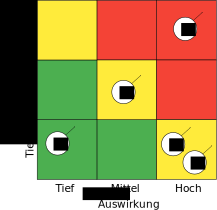
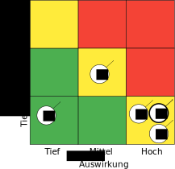

- ·
- ·  Nebucatnetzer
NebucatnetzerThis manuscript (permalink) was automatically generated from Nebucatnetzer/manubot_test@18b2dec on December 24, 2019.
- · NebucatnetzerDies ist die Dokumentation für die Diplomarbeit von Andreas Zweili, welche dieser im Rahmen seines Studiums an der IBZ Schule in Aarau erarbeitete. Die Diplomarbeit behandelt dabei: das Auswählen der Technologien für das Erstellen einer grafischen Oberfläche für das Kommandozeilen Backup Programm BorgBackup, die Realisierung besagter Oberflache und der dabei verwendeten Werkzeuge, die Projektplanung sowie die dabei aufgetretenen Probleme.
Diese Arbeit hat zum Ziel, die Planung und Erstellung einer grafischen Oberfläche zum einfachen Bedienen der Software BorgBackup [1], durchzuführen sowie zu dokumentieren.
Zweck dieses Dokumentes ist die vollständige und nachvollziehbare Dokumentation zur Diplomarbeit von Andreas Zweili.
Inhalte sind in der Regel chronologisch sortiert, vom ältesten zum jüngsten Ereignis, und nach Kapiteln getrennt. An gewissen Stellen kann die chronologische Reihenfolge allenfalls nicht gewährleistet werden.
Dieses Dokument wurde von Andreas Zweili im Rahmen der Diplomarbeit an der IBZ Schule erstellt und steht unter der Creative Commons BY-SA 4.0 [2] Lizenz. Dadurch darf die Arbeit unter Beibehalten der Lizenz kopiert und weiterverarbeitet werden. Zusätzlich muss der Urheber genannt werden.
Die Software soll BorgBackup für den durchschnittlichen Computer User zugänglich machen. Backups sollen dabei schnell und unkompliziert erstellt werden können. Auch die Möglichkeit automatischer im Hintergrund laufender Backups soll dem User gegeben sein, damit die Hürde für Backups so tief wie möglich gehalten wird.
Die besten Backups sind solche, bei denen man gar nicht mehr weiss, dass man sie hat bis man sie braucht.
BorgBackup ist deshalb interessant, weil es während einem Backup relativ wenig Ressource im Vergleich zu anderen Systemen benötigt und schon relativ lange aktiv entwickelt wird. Dadurch ist es im Alltag geprüft worden. Des Weiteren bietet BorgBackup die Funktion für Verschlüsselung, was es einem User ermöglicht die Daten auf einem unsicheren Cloud Speicher abzulegen.
Des Weiteren speichert BorgBackup die Daten mit Block basierter Deduplikation ab. Dies hat den riesigen Vorteil, dass bei einem Backup nur die Änderungen auf Block-Ebene gespeichert werden und nicht jedes Mal die ganze Datei kopiert werden muss.
Damit ermöglicht die Software auch Backups von sehr grossen Dateien, wie Videos oder Disk Images von virtuellen Maschinen, in mehreren Versionen. Ohne dabei jedoch signifikant mehr an Speicher zu benötigen. Zusätzlich werden die Backups dadurch rasend schnell ausgeführt. Gerade dieses Feature macht BorgBackup in den Augen des Autors besonders interessant, da sich der durchschnittliche User möglichst wenig mit Dingen wie Backups auseinandersetzen möchte. Umso besser also, wenn sie schnell gehen und so wenig Speicherplatz wie möglich verbrauchen.
BorgBackup wird jedoch komplett über die Kommandozeile bedient. Somit ist es für normale Benutzer eher schwierig den Zugang zu der Software zu finden, geschweige denn sie zu bedienen.
BorgBackup bietet Entwicklern eine JSON, API, mit welcher sie, von BorgBackup ausgegebenen Dateien einfach weiterverarbeiten können.
BorgBackup steht unter einer BSD [3] Lizenz zur Verfügung und ist somit gemäss den Richtlinien der Free Software Foundation Freie Software [4].
Das Projekt muss dabei vom Studenten in Eigenarbeit und einer Zeit von 250 Stunden bis zum 18. März 2019 erarbeitet werden.
BorgBackup ist eine Kommandozeilen basierte Backup Software. Hauptziel dieser Arbeit ist, ein GUI für die Software BorgBackup zu entwickeln um die Nutzung zu vereinfachen. Da BorgBackup selber freie Software ist und mit freier Software viel gute Erfahrungen gemacht wurden, soll das Projekt selber auch wieder Freie Software sein. Zum einen, um der Community etwas zurückzugeben, des weiteren, um anderen Entwicklern die Möglichkeit zu geben die Software zu verbessern und weiter zu entwickeln.
Als Nebenziel soll mit dieser Arbeit auch die Verbreitung von freier Software gefördert werden. Dies wird insbesondere dadurch erreicht, dass die Software selbst unter der GPL Version 3 veröffentlicht wird. Wenn möglich soll während der Entwicklung auch hauptsächlich freie Software verwendet werden, um aufzuzeigen das ein solches Projekte nicht zwingend von proprietärer Software abhängig ist. Die gesamte Arbeit wird zudem zu jedem Zeitpunkt öffentlich einsehbar sein. Der Quelltext der Dokumentation ist unter diesem Link erreichbar: https://git.2li.ch/Nebucatnetzer/thesis
Die Entwicklung wird hauptsächlich auf einem Linux System stattfinden. Da BorgBackup einerseits hauptsächlich auf Unix Systeme ausgelegt ist und anderseits die Hauptzielgruppe des Projektes auch auf Linux Usern liegt. Trotzdem sollen im Projekt cross-plattform fähige Technologien eingesetzt werden, damit es in der Zukunft möglich ist das Projekt auf andere Plattformen auszuweiten.
Im Projektantrag wurden vorgängig folgende Ziele definiert und entsprechend gewichtet. Die Gewichtung wurde dabei so vorgenommen, dass Ziele mit einer Muss-Gewichtung den Minimalanforderungen der zu entwickelnden Software entsprechen. Die weiteren Ziele wurden von 5 bis 1 gewichtet. Die Bewertung 5 bedeutet, dass die Umsetzung sehr nützlich und oder wichtig für die Software ist und daher in naher Zukunft zu implementieren ist. Ein Ziel mit einer tiefen Bewertung sollte, wenn möglich, auch einmal in die Software integriert werden und ist nicht unwichtig.
| Ziel-Nr. | Zielsetzung | Muss | Wunsch (1-5, 5=sehr wichtig) |
|---|---|---|---|
| 1. | Die Anwendung setzt auf cross-plattform (Linux, Windows, OS X) fähige Technologien. | x | |
| 2. | Die Anwendung steht unter der gpl v3 der Öffentlichkeit zur Verfügung. | x | |
| 3. | Der User kann mit weniger als 3 Klicks ein Backup ausführen. | x | |
| 4. | Der User kann ein Archiv mit 3 Klicks löschen. | x | |
| 5. | Der User kann unter Linux ein Archiv mit zwei Klicks „read-only“ als Laufwerk mounten. | x | |
| 6. | Der User kann ein Archiv wieder herstellen. | x | |
| 7. | Der User kann den zu sichernden Pfad manuell in der Anwendung definieren. | x | |
| 8. | Die Applikation holt ihre Konfiguration aus einer Plain-Text Datei. | x | |
| 9. | Der User kann sein Repository auf einer Harddisk ablegen. | x | |
| 10. | Die Anwendung exkludiert für einen Linux Computer sinnvolle Pfade bereits zu Beginn. | x | |
| 11. | Die Archivliste wird nach einer Aktion automatisch aktualisiert. | x | |
| 12. | Der User kann sein Repository auf einem über ssh erreichbaren Server ablegen. | 5 | |
| 13. | Der User kann den Namen eines Archivs selbst bestimmen. | 5 | |
| 14. | Die Anwendung meldet transparent, wenn das Repository nicht erreichbar ist. | 5 | |
| 15. | Die Anwendung meldet dem User, wenn noch ein hypervisor am Laufen ist. | 5 | |
| 16. | Die Anwendung leitet Meldungen von BorgBackup transparent weiter. | 5 | |
| 17. | Die Anwendung zeigt transparent an das BorgBackup im Hintergrund bereits läuft. | 5 | |
| 18. | Das Repository wird nach jedem Backup bereinigt. | 4 | |
| 19. | Der User kann automatische Hintergrundbackups in der Anwendung konfigurieren. | 4 | |
| 20. | Die Anwendung gibt dem User die Möglichkeit ein passendes Repository zu erstellen, wenn keines gefunden wird, die Anwendung jedoch bereits konfiguriert ist. | 4 | |
| 21. | Die Applikation verwendet, wann immer möglich allgemeingültige Umgebungsvariablen. | 4 | |
| 22. | Die Anwendung cached/speichert (evtl. zusätzliche) Informationen in einer Datenbank. | 3 | |
| 23. | Die Anwendung zeigt beim ersten Starten einen Setup Wizard. | 3 | |
| 24. | Der User kann sich mit 3 Klicks das Log eines Archivs anschauen. Nur möglich mit einer zusätzlichen DB. | 3 | |
| 25. | Die Anwendung kann Systembenachrichtigungen auslösen. | 3 | |
| 26. | Der User kann die Anwendung grafisch konfigurieren. | 3 | |
| 27. | Der User kann entscheiden, ob ein gemountetes Archiv nach dem Schliessen der Applikation noch weiter verfügbar ist. | 2 | |
| 28. | Der User kann das Repository wechseln. | 2 | |
| 29. | Der User kann ein Archiv nach einer Datei oder einem Ordner durchsuchen. | 2 | |
| 30. | Der User kann die „Retention Policy“ konfigurieren. | 2 | |
| 31. | Die Anwendung kann mit allen Features von BorgBackup umgehen. | 2 | |
| 32. | Die Applikation prüft, ob sie sich im richtigen Netzwerk befindet bevor sie eine Verbindung zum Server aufbaut. | 2 |
Die Anwendung beschränkt sich darauf Funktionen von BorgBackup grafisch darzustellen oder nützlich zu erweitern, soweit dies über die API möglich ist. Wie in Abbildung:(1) zu sehen ist, werden die Aktionen effektiv immer vom BorgBackup Binary ausgeführt und nicht von der grafischen Oberfläche. Eine Erweiterung von BorgBackup ist nicht vorgesehen. Dies aus dem Grund das Backups, Deduplikation und Verschlüsselung sowie deren korrekte Implementation komplexe Themen sind und unbedingt nur von Experten angegangen werden sollten. Die Auswirkungen von Fehlern sind sind schlicht zu gross.
Des Weiteren wird die Grundlage für eine kollaborative Entwicklung geschaffen. Während der Laufzeit der Diplomarbeit werden jedoch keine Inputs aus der BorgBackup Community im Bezug auf die Entwicklung entgegengenommen.
Bugs von BorgBackup welche während der Dauer der Diplomarbeit vom Studenten entdeckt werden, wird dieser dem Projekt melden, jedoch nicht selber beheben.
Für das Projekt wurde die Wasserfall gewählt. Da nur eine einzige Person am Projekt arbeitet, kann nur ein Task nach dem anderen abgearbeitet werden und viele Aufgaben stehen in Abhängigkeit zueinander. Somit macht das iterative Vorgehen der Wasserfall für dieses Projekt am meisten Sinn.
Die komplette Dokumentation, der Quellcode der Applikation sowie jegliche zusätzlichen Dokumente, wie etwa die Zeitplanung, werden mittels der Software Git versioniert. Thematisch zusammengehörende Änderungen werden in einem Commit zusammengefasst. Somit ist jederzeit nachvollziehbar, was wann geändert hat. Ein Commit sollte dabei gemäss dem Artikel von Chris Beams „How to write a Git Commit Message“ [5] und in englischer Sprache geschrieben sein.
Versionsnummern sind für die Applikation zum jetzigen Zeitpunkt noch nicht vorgesehen. Sollten sie zukünftig einmal verwendet werden, soll eine semantische Versionierung [6] verwendet werden. Dabei ist eine Versionsnummer immer nach diesem Schema aufgebaut, MAJOR.MINOR.PATCH. Bei Änderungen wird die:
Auf jeden Fall sollte, sofern möglich, immer nur lauffähiger Code im Master Branch eingecheckt sein, damit der Master Branch immer eine funktionierende Software repräsentiert. Dies gilt auch für das Repository der Dokumentation. Der Master Branch der Dokumentation sollte maximal mit zwei Befehlen make clean und make „kompilierbar“ sein.
Als Software für die Versionskontrolle wurde Git [7] aus den folgenden Gründen ausgewählt:
Sowohl bei der Dokumentation wie auch bei der Programmierung wurde hauptsächlich der Editor GNU Emacs [8] verwendet. GNU Emacs ist mit 32 Jahren (seine Wurzeln reichen bis ins Jahre 1976 zurück) wohl eines der ältesten noch aktiven Software Projekte. Emacs ist Freie Software unter der GPL v3. Emacs wurde gewählt, da es ein schneller, schlanker und sehr flexibler Texteditor ist. Von normaler Textmanipulation über Taskmanagement bis zu Emails schreiben ist alles möglich.
Diese Dokumentation wurde in Org-mode [9], einer Erweiterung für den Text Editor Emacs, geschrieben. Die Syntax von Org-mode erinnert an Markdown. Org-mode bietet einem eine Vielzahl an Hilfen, inklusive dem Erstellen von Tabellen und Spreadsheet Funktionen. Für die finale Version des Dokuments kann Org-mode die ursprünglich Textdatei über LaTeX in eine .SVG Datei exportieren.
LaTeX [10] ist eine Software, welche einem die Benutzung des Textsatzsystems TeXs vereinfacht. LaTeX wurde gegenüber einem „What You See Is What You Get“ (z.Bsp. MS. Word) Editor gewählt, weil es einem mit seiner Markup Sprache erlaubt das Dokument in Textdateien zu erstellen, gerade für Programmierer ist dies eine sehr interessante Lösung. Dadurch, dass LaTeX auch nur aus reinen Textdateien besteht, können die Dokumente auch ohne weiteres in die Versionskontrollsoftware einchecken und die Entwicklung im Log zurückverfolgen. LaTeX ist Freie Software unter der LaTeX Project Public License.
Die Grafiken in diesem Dokument wurden hauptsächlich mit dem Vektor Grafik Editor Inkscape [11] erstellt. Inkscape ist Freie Software unter der GNU Public License v3.
Die Diagramme wurden mit Draw.io [12] erstellt. Draw.io ist Freie Software unter Apache Lizenz Version 2.0 [13] und kann sowohl als Desktop Applikation wie auch als Webanwendung genutzt werden.
Beim Design der Arbeit wurden soweit als möglich die typographischen Regeln aus dem Buch „Practical Typography“ von Matthew Butterick [14] angewandt. Bei den Diagrammen wurden ausschliesslich Farben aus der von Google entwickelten Design Sprache „Material“ [15] eingesetzt.
Die detaillierte Zeitplanung ist dem Ganttchart in der Datei 02_Zeitplanung_Andreas_Zweili.html zu entnehmen. Bei der Zeitplanung wurde darauf geachtet, dass die Arbeit soweit als möglich nicht mit dem Berufsleben kollidiert. An einem normalen Arbeitstag wurde dabei damit gerechnet das ca. 2 Stunden Arbeit am Abend möglich sein sollten. An einem arbeitsfreien Tag wurde mit 6 Stunden Arbeit gerechnet. Über die Festtage wurden diverse Tage von der Planung ausgenommen, da es nicht realistisch schien, dass an diesen Tagen die Arbeit signifikant vorwärts gehen würde. Auch Schultage wurde nicht als Arbeitstage gerechnet.
Um die Arbeitslast zu verteilen, wurde vom 14. Januar bis zum 11. März auf der Arbeitsstelle jeder Montag als frei eingegeben. Dadurch steht während des Projektes etwas mehr Zeit zur Verfügung, als mit einer 100 Prozent Arbeitsstelle möglich wäre.
Mit dem Controlling wird die Planung mit den effektiv verwendeten Ressourcen verglichen und ausgewertet. Somit können für zukünftige Projekte Lehren gezogen werden.
Um den geschätzten Zeitaufwand mit dem effektiv geleisteten Aufwand zu vergleichen wurde die Tabelle:(28) erstellt. Darin werden die beiden Aufwände einander gegenübergestellt und grössere Abweichungen begründet. Die Nummer vor jeder Aufgabe in der Tabelle korreliert dabei mit den Aufgabennummern im Ganttchart.
In der Tabelle:(26) wurden die für die Arbeit benötigten Materialen erfasst. Da es sich beim Projekt um ein reines Software Projekt handelt ist der Material Aufwand entsprechend gering. Im Abschluss des Projektes werden die geplanten Ressourcen den effektiv verwendeten gegenübergestellt.
Werden die internen Lohnkosten des Projektleiters auf ca. 60 CHF pro Stunde geschätzt (dies entspricht in etwa dem doppelten reelen Stundenlohn des Projektleiters), ergeben sich gemäss der Berechnung in der Tabelle:(27), theoretische Kosten von 19080 CHF für die Umsetzung dieser Arbeit. Die Kosten für die Entwicklung werden im Projekt jedoch nicht berücksichtigt. Somit sind diese nur ein rein theoretischer Faktor.
Das Risikomanagement dient dazu Risiken im Projekt zu erkennen und Massnahmen zur Vermeidung zu definieren. Dadurch steht man Risiken nicht unvorbereitet gegenüber, sollten sie eintreffen.
In der Tabelle: (2) sind die Risiken des Projektes gemeinsam mit ihren Gegenmassnahmen aufgelistet. Somit können gewisse Risiken bereits vorher vermieden werden.
| Beschreibung | Massnahmen |
|---|---|
| Ein grösseres Problem in der Programmierung blockiert den Fortschritt. | Immer nur eine Sache auf einmal in der Code-Basis ändern, alle Fehler beheben und erst dann zur nächsten Aufgabe weitergehen. |
| Viel Arbeit an der Arbeitsstelle, dabei bleibt weniger Zeit für die Diplomarbeit. | Auf der Arbeit Freitage eingeben um die Last etwas zu verteilen. Projektplanung machen. |
| Know-How zur Umsetzung ist nicht vollständig vorhanden. | Gute Informationsbeschaffung im Internet, Büchern, etc. |
| Manuelle Tests brauchen zu viel Zeit. | Soviel wie möglich automatisieren. Dabei jedoch nicht den Fokus auf die eigentliche Entwicklung verlieren. |
| Die Programmierung des Programms benötigt zu viel Zeit. | Bei der Projektplanung genau definieren was die GUI Applikation beinhalten muss. Ziele definieren, Abgrenzungen treffen. |
| User haben keine Zeit für Benuterfreundlichkeitsstudie. | Vor gängig einen Termin abmachen. |
| BorgBackup ändert fundamental seine api. | Gegen eine fixe Version von BorgBackup entwickeln. |
Die SWOT-Analyse ist eine Methode die Stärken, Schwächen, Chancen und Gefahren zu erkennen, indem eine 4-Felder-Matrix ausgefüllt wird.
Grundlage einer guten SWOT Analyse ist eine klare Zieldefinition und Fragestellung. Die ausgefüllte SWOT-Analyse für dieses Projekt ist in der Abbildung:(2) zu sehen.

Die Projektumwelt-Analyse ist eine Methode die Beziehungen, Erwartungshaltungen und Einflüsse auf das Projekt durch interne und externe soziale Umwelt zu betrachten und zu bewerten. Auf Grundlage der Analyseergebnisse werden erforderliche Massnahmen zur Gestaltung der Umweltbeziehungen abgeleitet. Die Gestaltung der Projektumweltbeziehungen ist eine Projektmanagementaufgabe. In der Tabelle:(3) wurden die Anforderungen und Wünsche mit Einschätzung der Wahrscheinlichkeit und der Einflussnahme aufgenommen. Zusätzlich ist die Beziehung der Stakeholder zum Projekt noch in der Abbildung:(3) grafisch dargestellt.
Da das Projekt so ausgelegt ist, dass der Projektleiter es in Eigenarbeit verwirklichen kann, ist der Einfluss der Stakeholder während der Umsetzung sehr gering. Die User werden bei der Entwicklung mittels einer Usability-Studie miteinbezogen und die BorgBackup Community wird mit regelmässigen Posts auf dem offiziellen Github Repository auf dem Laufenden gehalten. Nach Ende der Diplomarbeit soll das Projekt für interessierte Entwickler jedoch offen sein. Der Quellcode wird bereits während der Arbeit öffentlich zur Verfügung gestellt.
| Nr. | Stakeholder | Einfluss | Anforderung/Wünsche | Wahrscheinlichkeit |
|---|---|---|---|---|
| 1. | BorgBackup Community | gering | Eine Applikation, die den Umfang von BorgBackup abdeckt | mittel |
| Open-Source | hoch | |||
| Mitspracherecht bei der Entwicklung | niedrig | |||
| 2. | User | gering | Einfache Bedienbarkeit | hoch |
| Einmal einrichten und vergessen | mittel | |||
| 3. | Interessenten | gering | Einfach verständliches Projekt Repository | hoch |
| Einfaches Setup zum Testen | hoch | |||
| 4. | Projektleiter | hoch | Stabile Anwendung erstellen | mittel |
| Ein nachhaltiges Projekt starten | mittel | |||
| Anerkennung im fachlichen Umfeld | niedrig |
Bei der Risiko-Analyse wird von einem durchschnittlichen Benutzer ausgegangen, der zur Zeit noch keine Backups macht und beginnen möchte BorgBackup zu nutzen, um auf einer externen Harddisk seine Backups zu speichern.
Es wird eine Ist/Soll Analyse gemacht. Jedes Risiko wurde entsprechend der Tabelle:(4) nach der Wahrscheinlichkeit des Eintreffens bewertet und entsprechend der Tabelle:(5) nach seiner Auswirkung im Bezug auf die Nützlichkeit der gemachten Backups.
In der Tabelle:(6) sind dabei die Risiken für das Szenario aufgelistet und nummeriert. In der Abbildung:(4) ist die Bewertung des Ist-Risikos grafisch dargestellt und in der Abbildung:(5) ist das Soll-Risiko, welches mit dieser Arbeit angestrebt wird, ebenfalls grafisch dargestellt.
Es sollte im Rahmen der Arbeit möglich sein die meisten Risiken zu verringern. Da automatische Hintergrundbackups jedoch ein Kann-Ziel sind wir in dieser Analyse nicht davon ausgegangen, dass man das Risiko Nr. 5 im Rahmen dieser Arbeit reduzieren kann.
| Bewertung | Beschreibung: Wahrscheinlichkeit (W) |
|---|---|
| 1 = gering | Unwahrscheinlich, <20% |
| 2 = mittel | Mässig wahrscheinlich, 20-50% |
| 3 = hoch | Hohe Wahrscheinlichkeit > 50% |
| Bewertung | Beschreibung: Auswirkung (A) |
|---|---|
| 1 = gering | Geringe Auswirkungen auf Nützlichkeit |
| 2 = mittel | Mittlere Auswirkung auf die Nützlichkeit |
| 3 = hoch | Hohe Auswirkung auf die Nützlichkeit |
| Nr. | Beschreibung |
|---|---|
| 1. | Der Benutzer hat noch nie die Kommandozeile verwendet und scheitert bereits an der Installation von BorgBackup. |
| 2. | Der Benutzer verwendet keine Verschlüsselung und verliert seine Harddisk. |
| 3. | Der Benutzer speichert die Backups auf der internen statt der externen Harddisk. |
| 4. | Der Benutzer löscht aus Versehen ein Backup. |
| 5. | Der Anwender vergisst die Backups zu machen. |
Der Anforderungskatalog entspricht 1:1 den Zielen, welche in der Tabelle 1 definiert wurden. Im Zeitplan wurde der Fokus hauptsächlich auf die Muss-Ziele gelegt. Ein paar der Kann-Ziele sind im Konzept jedoch auch abgebildet.
Ein Use Case sammelt alle möglichen Szenarien, die eintreten können, wenn ein Akteur versucht, mithilfe des betrachteten Systems ein bestimmtes Ziel zu erreichen. Dabei beschreibt er, was beim Versuch der Zielerreichung passieren kann. Je nach Ablauf kann auch ein Fehlschlag ein Ergebnis eines Anwendungsfalls sein (e.g. falsches Passwort beim Login). Dabei wird die technische Lösung nicht konkret beschrieben. Die Detailstufe kann dabei sehr unterschiedlich sein.[usecase]
„Ein Anwendungsfalldiagramm … ist eine der 14 Diagrammarten der Unified Modelling Language (UML), einer Sprache für die Modellierung der Strukturen und des Verhaltens von Software- und anderen Systemen. Es stellt Anwendungsfälle und Akteure mit ihren jeweiligen Abhängigkeiten und Beziehungen dar.“[16]
Das Anwendungsfalldiagramm für das BorgBackup GUI ist in der Abbildung:(6) zu sehen.
Use Cases werden in der Regel mithilfe einer sogenannten Use Case Schablone im Detail beschrieben, damit klar ist, wie der Ablauf jeweils genau aussieht. Die in diesem Projekt verwendete Schablone wurde von Alistair Cockburn definiert.
Die nachfolgend aufgeführten Use Cases, Tabellen:(7, 8, 9, 10, 11, 12, 13) wurden dem Anwendungsfalldiagramm, Abbildung:(6), entnommen und zusätzlich noch um jeweils ein Aktivitätsdiagramm, Abbildungen: (7, 8, 9, 10, 11, 12), erweitert um den Ablauf verständlicher zu machen.
Ein Aktivitätsdiagramm ist dabei ein hilfreiches UML Diagramm zum Erweitern von Use Cases und zeigt einem gut die Zuständigkeiten der Aktoren auf.
| Identifier + Name | 1.0 Backup erstellen |
|---|---|
| Description | Das Erstellen einer Datensicherung durch BorgBackup anstossen. |
| Actors | Benutzer |
| Status | Freigegeben |
| Includes | - |
| Trigger | User möchte ein Backup erstellen. |
| Preconditions | Die Applikation wurde gestartet. |
| Postconditions | Das erstellte Backup wird angezeigt. |
| Normal Flow | 1. Den Quellpfad auswählen. |
| 2. Den Button „Backup“ anklicken. | |
| 3. Ein Pop-Up mit Fortschrittsbalken erscheint und zeigt die Zeit bis zum Ende des Backups an. | |
| 4. Am Ende des Backups verschwindet das Pop-up wieder. | |
| 5. Die Liste der Backups aktualisiert sich. | |
| Alternative Flow | - |
| Notes | - |
| UC History | 1.0 Draft erstellt durch AZ |
| Author | A. Zweili |
| Date | 30.12.2018 |
| Identifier + Name | 2.0 Backup löschen |
|---|---|
| Description | Ein zuvor erstelltes Backup wird gelöscht. |
| Actors | Benutzer |
| Status | Freigegeben |
| Includes | - |
| Trigger | Ein User möchte ein bestehendes Backup löschen. |
| Preconditions | Use Case 1.0 ausgeführt. |
| Postconditions | Das gelöschte Backup wird nicht mehr aufgelistet. |
| Normal Flow | 1. Ein Backup aus der Liste auswählen. |
| 2. Den Button „Delete anklicken“. | |
| 3. Ein Bestätigungsdialog erscheint. | |
| 4. Im Dialog den „Ok“ Button anklicken. | |
| Alternative Flow | 1. Ein Backup aus der Liste auswählen. |
| 2. Den Button „Delete anklicken“. | |
| 3. Ein Bestätigungsdialog erscheint. | |
| 4. Die Aktion mit einem Klick auf den „Cancel“ Button abbrechen. | |
| Notes | - |
| UC History | 1.0 Draft erstellt durch AZ |
| Author | A. Zweili |
| Date | 30.12.2018 |
| Identifier + Name | 3.0 Backup wiederherstellen |
|---|---|
| Description | Alle Dateien eines Backups wiederherstellen. |
| Actors | User |
| Status | Freigegeben |
| Includes | - |
| Trigger | Daten sollen wieder hergestellt werden. |
| Preconditions | Use Case 1.0 wurde ausgeführt. |
| Postconditions | Die Dateien aus dem Backup wurde im angegeben Pfad wiederhergestellt. |
| Normal Flow | 1. Ein Backup aus der Liste auswählen. |
| 2. Den Button „Restore“ klicken. | |
| 3. Ein Pop-up zur Auswahl eines Zielpfades erscheint. | |
| 4. Den Zielpfad mit Klick auf „Choose“ bestätigen. | |
| 5. Ein Dateiexplorer öffnet sich mit dem ausgewählt Pfad und enthält die Dateien aus dem Backup. | |
| Alternative Flow | 1. Ein Backup aus der Liste auswählen. |
| 2. Den Button „Restore“ klicken. | |
| 3. Ein Pop-up zur Auswahl eines Zielpfades erscheint. | |
| 4. Die Aktion mit Klick auf „Cancel“ abbrechen. | |
| Notes | - |
| UC History | 1.0 Draft erstellt durch AZ |
| Author | A. Zweili |
| Date | 30.12.2018 |
| Identifier + Name | 4.0 Einzelne Datei wiederherstellen |
|---|---|
| Description | Das spezifische Wiederherstellen von einer oder mehreren Dateien. |
| Actors | User |
| Status | Freigegeben |
| Includes | Use Case 4.1 |
| Trigger | Daten sollen wieder hergestellt werden. |
| Preconditions | Use Case 1.0 wurde ausgeführt. |
| Postconditions | - |
| Normal Flow | 1. Ein Backup aus der Liste auswählen. |
| 2. Auf den Button „Mount“ klicken. | |
| 3. Use Case 4.1 wird ausgeführt. | |
| 4. Ein Dateiexplorer öffnet sich mit dem ausgewählt Pfad und enthält die Dateien aus dem Backup. | |
| 5. Wird die Applikation geschlossen wird das Backup ausgehängt. | |
| Alternative Flow | - |
| Notes | - |
| UC History | 1.0 Draft erstellt durch AZ |
| Author | A. Zweili |
| Date | 30.12.2018 |
| Identifier + Name | 4.1 Backup mounten |
|---|---|
| Description | Ein Backup wird als fuse gemountet. |
| Actors | Borg GUI, BorgBackup |
| Status | Freigegeben |
| Includes | - |
| Trigger | Das Borg GUI gibt an BorgBackup den Input zum mounten weiter. |
| Preconditions | Use Case 1.0 wurde ausgeführt. |
| Postconditions | Das Backup wurde gemountet. |
| Normal Flow | 1. Borg GUI sammelt die Backup ID in Use Case 4.0. |
| 2. Borg GUI übergibt die Backup ID an BorgBackup zusammen mit einem Zielpfad. | |
| 3. BorgBackup hängt das Backup als fuse Laufwerk am Zielpfad ein. | |
| 4. BorgBackup meldet Erfolg an Borg GUI. | |
| Alternative Flow | 1. BorgBackup GUI sammelt die Backup ID in Use Case 4.0. |
| 2. Borg GUI übergibt die Backup ID an BorgBackup zusammen mit einem Zielpfad. | |
| 3. BorgBackup hängt das Backup als fuse Laufwerk am Zielpfad ein. | |
| 4. BorgBackup meldet einen Fehler an Borg GUI. | |
| Notes | - |
| UC History | 1.0 Draft erstellt durch AZ |
| Author | A. Zweili |
| Date | 30.12.2018 |
| Identifier + Name | 5.0 Konfiguration ändern |
|---|---|
| Description | Das Verändern und Speichern der Konfiguration der Applikation. |
| Actors | User |
| Status | Freigegeben |
| Includes | - |
| Trigger | Ein User möchte die Einstellungen der Applikation anpassen. |
| Preconditions | Applikation gestartet. |
| Postconditions | - |
| Normal Flow | 1. Auf den Button „Settings“ klicken. |
| 2. Ein neues Fenster mit den Einstellungen öffnet sich. | |
| 3. Der Benutzer ändert mindestens eine Einstellung. | |
| 4. Der Button „OK“ wird angeklickt. | |
| 5. Die Konfiguration wird in die Konfigurationsdatei geschrieben und in der Applikation geladen. | |
| Alternative Flow | 1. Auf den Button „Settings“ klicken. |
| 2. Ein neues Fenster mit den Einstellungen öffnet sich. | |
| 3. Der Benutzer kann Einstellungen ändern. | |
| 4. Der Button „Cancel“ wird angeklickt. | |
| 5. Jegliche Änderungen werden verworfen und die Konfigurationsdatei bleibt im aktuellen Zustand. | |
| Notes | - |
| UC History | 1.0 Draft erstellt durch AZ |
| Author | A. Zweili |
| Date | 30.12.2018 |
| Identifier + Name | 6.0 automatische Backups aktivieren |
|---|---|
| Description | Ein Systemdienst wird hinterlegt zum Ausführen automatischer Backups. |
| Actors | User |
| Status | Freigegeben |
| Includes | - |
| Trigger | Ein User möchte automatisierte Backups haben. |
| Preconditions | Eine funktionierende Konfiguration muss hinterlegt sein. |
| Applikation gestartet. | |
| Postconditions | Ein Systemdienst wurde erstellt welcher jeden Tag ein Backup macht. |
| Normal Flow | 1. Auf den Button „Settings“ klicken. |
| 2. Bei der Option „Automatic Backups“ den Hacken setzen. | |
| 3. Die Settings mit klick auf „Ok“ schliessen und speichern. | |
| Alternative Flow | 1. Auf den Button „Settings“ klicken. |
| 2. Bei der Option „Automatic Backups“ den Hacken setzen. | |
| 3. Die Aktion mit klick auf „Cancel“ abbrechen | |
| Notes | - |
| UC History | 1.0 Draft erstellt durch AZ |
| Author | A. Zweili |
| Date | 30.12.2018 |
Damit nachvollziehbar ist welche Funktionen von BorgBackup verwendet wurden um die Use Cases umsetzen zu können, werden diese hier in Beziehung zur jeweiligen Funktion des GUI aufgelistet:
borg create [17].borg list [18].borg extract [19].borg delete [20].borg mount [21].borg umount [21].borg info [22].Die detaillierte Implementation wird in der Sektion Realisierung beschrieben.
Mit der JSON API von BorgBackup stehen einem diverse Möglichkeiten zur Verfügung, um das Programm anzubinden. Da das Ziel ist, das Programm normalen Nutzern zugänglicher zu machen, bietet sich ein normales Desktop Programm am ehesten an. Desktop Programme werden von allen Computer Usern täglich genutzt und sind somit etwas was sie kennen. Zudem ist es für die User auch viel einfacher zu verstehen, als wenn sie vor der Nutzung einen lokalen Webserver starten und diesen im Anschluss zur Nutzung wieder beenden müssten.
Mit der Idee aus der „Einleitung zu den Varianten“ wurde dann eine Tabelle, mit Anforderungen an die Technologien, erstellt. Die Bewertungspunkte setzen sich einerseits aus Projektzielen anderseits aus für das Projekt sinnvollen Punkten zusammen. Dadurch ergeben sich dann die Bewertungen, welche in der Tabelle:(14) aufgenommen wurden. Die möglichen Varianten wurden danach bewertet. Die effektive Berechnung des Resultats wird nach folgender Formel durchgeführt.
\[G * EP = KE\]
Also die Gewichtung(G) multipliziert mit der erreichten Punktzahl(EP) ergibt das Kriteriumsergebnis(KE). Für das Endresultat wird dann die Summe über alle Kriterien gebildet. Die Variante mit der höchsten Summe wurde für das Projekt ausgewählt.
Mussziele erhalten dabei eine Gewichtung von 10 und Wunschziele eine Gewichtung entsprechend der Bewertung in der Tabelle Projektziele:(1).
| Kriterium | Gewichtung | max. Punktzahl | erreichte Punktzahl | Kriteriums- ergebnis |
|---|---|---|---|---|
| 1. Cross Plattform nutzbar | 10 | 10 | 10 | 100 |
| 2. Freie Software | 5 | 10 | 10 | 50 |
| 3. Vorkenntnisse | 5 | 10 | 10 | 50 |
| 4. Integriert sich gut ins System | 5 | 10 | 10 | 50 |
| 5. Ohne spezielle Tools nutzbar | 5 | 10 | 10 | 50 |
| 6. Lesbarkeit des Codes | 5 | 5 | 5 | 25 |
| 7. Einfachheit des Setups | 5 | 5 | 5 | 25 |
| 8. Lernfaktor | 5 | 5 | 5 | 25 |
| 9. Verbreitung bei der BorgBackup Community | 5 | 5 | 5 | 25 |
| 10. Geschwindigkeit der Entwicklung | 3 | 5 | 5 | 15 |
| Total | 415 |
Für die Backend Programmierung bieten sich die folgende drei Sprachen an: C#, C++ und Python. Dies vor allem, weil alle drei Allrounder Sprachen sind und sich gut für Desktop Applikationen eignen.
C# ist eine von Microsoft entwickelte Programmiersprache, welche viele Frameworks zur Verfügung stellt. Insbesondere aufgrund der grossen kommerziellen Nutzung und der guten Integration mit Microsoft Windows hat C# eine relative grosse Verbreitung. Bei Linux und OS X ist es jedoch schwieriger C# zu integrieren und zu nutzen da es nicht standardmässig installiert ist und der Fokus von C# hauptsächlich auf Microsoft Windows liegt.
Sie ist zu Teilen Freie Software. Die Common Language Runtime, welche für das Ausführen von Software zuständig ist, ist unter der MIT Lizenz lizenziert [23], der aktuelle Compiler Roslyn ist unter der Apache Lizenz verfügbar [24]. Da es sehr viele offizielle Teile um die Sprache C# gibt, kann im Rahmen des Projektes nicht direkt abgeschätzt werden, ob alle benötigten Teile Freie Software sind. Für die Bewertung wird deshalb ein kleinerer Wert als bei C++ und Python genommen.
C# ist die Programmiersprache, welche an der IBZ hauptsächlich gelehrt wird. Dadurch sind die Kenntnisse der Sprache und ihrer Anwendung bereits vorhanden. Ausserhalb der Schule wurde die Sprache jedoch noch nie eingesetzt.
Entwickelt wird C# hauptsächlich mit der IDE Microsoft Visual Studio. Dies ist eine sehr umfangreiche und komplexe Software. Visual Studio ist dabei nur für Windows und OS X erhältlich. Es ist auch möglich C# Projekte ausserhalb von Visual Studio zu erstellen, dies ist jedoch nicht sehr einfach.
Der Code ist gut lesbar und es gibt offizielle Styleguides von Microsoft was den Code über Projekte hinaus einheitlich aussehen lässt. Zudem hilft hier auch Visual Studio stark den Code entsprechend zu formatieren. Besonders angenehm sind die Klassen- und Methodennamen der offiziellen Frameworks. Insgesamt sehr gut gelöst aber in Sachen Lesbarkeit noch etwas hinter Python.
Unter Windows ist das Setup von C# relativ einfach. Allerdings ist es auch dort im Vergleich zu Python eine umfangreiche Angelegenheit Visual Studio sauber zu installieren und nutzbar zu machen. Auf anderen Plattform wird dies leider nicht einfacher und unter Linux ist es bereits schwierig eine funktionierende Umgebung in Gang zu bringen.
Da C# bereits an der IBZ gelehrt wird, ist der Lernfaktor hier, im Vergleich zu den anderen Sprachen, sicher am kleinsten. Allerdings gibt es noch keinerlei Kenntnisse beim Einbinden eines der unten aufgeführten GUI Frameworks. Daher gibt es auf jeden Fall noch genügend zu lernen.
Die BorgBackup Community hat vor relativ kurzer Zeit die offizielle Unterstützung von Windows zurückgezogen. Da C# eine sehr Windows lastige Sprache ist, wird daher davon ausgegangen, dass die Sprache innerhalb der BorgBackup Community nicht sehr verbreitet ist.
C# ist eine stark typisiert Sprache und kompilierte Sprache. Des Weiteren ist Visual Studio der Erfahrung nach nicht die schnellste Software. Dies alles führt dazu das C# nicht gerade die schnellste Sprache zum Programmieren ist. Jedoch aufgrund des moderneren Unterbaus ist sie sicher schneller als C++.
| Kriterium | Gewichtung | max. Punktzahl | erreichte Punktzahl | Kriteriums- ergebnis |
|---|---|---|---|---|
| 1. Cross Plattform nutzbar | 10 | 10 | 8 | 80 |
| 2. Freie Software | 5 | 10 | 8 | 40 |
| 3. Vorkenntnisse | 5 | 10 | 6 | 30 |
| 4. Integriert sich gut ins System | 5 | 10 | 8 | 40 |
| 5. Ohne spezielle Tools nutzbar | 5 | 10 | 6 | 30 |
| 6. Lesbarkeit des Codes | 5 | 5 | 4 | 20 |
| 7. Einfachheit des Setups | 5 | 5 | 2 | 10 |
| 8. Lernfaktor | 5 | 5 | 3 | 15 |
| 9. Verbreitung bei der BorgBackup Community | 5 | 5 | 1 | 5 |
| 10. Geschwindigkeit der Entwicklung | 3 | 5 | 3 | 9 |
| Total | 279 |
C++ ist eine stark typisierte und kompilierte Programmiersprache. Sie ist seit 1998 Teil des ISO Standards [25]. ISO/IEC 14882:2017 [26] ist zurzeit die aktuellste Variante. Die Sprache existiert seit ca. 33 Jahren und hat eine weitreichende Verbreitung gefunden. C++ ist auf allen Betriebssystemen gut unterstützt muss jedoch für jedes System separat kompiliert werden.
Von C++ sind innerhalb des Projektes keinerlei Vorkenntnisse vorhanden. Dies ist ein sehr hoher Risikofaktor.
C++ kompiliert direkt zu Maschinensprache und ist dadurch sehr performant und läuft sehr gut auf jedem System. C++ ist im Vergleich zu modernen Sprachen jedoch relativ komplex und bietet diverse Stolpersteine für Programmierer.
Zum Entwickeln braucht es verhältnismässig wenig Werkzeuge. Da die Sprache bereits sehr alt ist, stammt sie noch aus einer Zeit, wo man noch etwas rudimentärer programmierte. Allerdings braucht man in jedem Fall einen Compiler, um ein Programm zu erzeugen. Bei komplexeren Programmen wird man, um mindestens so etwas wie Makefile auch nicht herumkommen
Im Vergleich zu Python oder C# ist C++ wohl die am schwersten lesbare Sprache. Zudem gibt es auch keinen zentralen Styleguide, welcher einem vorgeben würde wie der Code am besten ausschauen sollte. Somit haben sich über die Jahre mehrere Standards etabliert.
Der Lernfaktor wäre aufgrund der mangelnden Vorkenntnisse hier ganz klar am Grössten.
Da C++ eine alte Sprache ist, geniesst sie auch eine dementsprechende Verbreitung. Daher ist anzunehmens dass sicher mindestens ein grösserer Teil der älteren BorgBackup Entwickler C++ oder C gelernt haben.
Da C++ auch heute noch zu den meistgenutzten Sprachen gehört, gibt es entsprechend viele Ressourcen dazu und Beispielprojekte, von denen man ableiten kann. Auch hilfreiche Libraries gibt es sehr viele, welche den Programmierer unterstützen können. Die Sprache selber ist jedoch eher umständlich zu schreiben. Hinzu kommt noch, dass man, während der Entwicklung immer wieder den Code kompilieren muss. In einem Projekt mit dieser begrenzten Zeitspanne eher ungeeignet.
| Kriterium | Gewichtung | max. Punktzahl | erreichte Punktzahl | Kriteriums- -ergebnis |
|---|---|---|---|---|
| 1. Cross Plattform nutzbar | 10 | 10 | 8 | 80 |
| 2. Freie Software | 5 | 10 | 10 | 50 |
| 3. Vorkenntnisse | 5 | 10 | 0 | 0 |
| 4. Integriert sich gut ins System | 5 | 10 | 8 | 40 |
| 5. Ohne spezielle Tools nutzbar | 5 | 10 | 6 | 30 |
| 6. Lesbarkeit des Codes | 5 | 5 | 2 | 10 |
| 7. Einfachheit des Setups | 5 | 5 | 3 | 15 |
| 8. Lernfaktor | 5 | 5 | 5 | 25 |
| 9. Verbreitung bei der BorgBackup Community | 5 | 5 | 3 | 15 |
| 10. Geschwindigkeit der Entwicklung | 3 | 5 | 2 | 6 |
| Total | 271 |
Der Python Interpreter ist für eine Vielzahl an Betriebssystemen erhältlich, inklusive Windows, OS X und Linux. Nahezu jedes Desktop Linux System kommt mit Python vor installiert. Auch OS X kommt bereits ab Werk mit Python Version 2. Version 3 lässt sich sehr einfach nachinstallieren und ist einfach nutzbar. Unter Windows gestaltetet sich die Installation etwas aufwendiger aber auch nicht sehr kompliziert. Python integriert sich in Windows jedoch etwas weniger elegant als C#.
Python ist freie Software unter der Python Software Foundation License [27] und wird durch die Python Software Foundation in einem Community basierten Modell entwickelt.
Die Vorkenntnisse sind im Vergleich zu C++ relativ gross und zu C# etwas weniger ausgeprägt. Es wurden damit im Rahmen der Ausbildung schon ein grösseres Projekt realisiert und ansonsten mehrere kleine Projekte im Privaten erstellen.
Für Python gibt es ein paar IDE welchen den Programmierer bei seiner Arbeit unterstützen können. Keine davon ist allerdings ein Muss, um Python programmieren zu können. Im einfachsten Fall wäre dies mit Notepad möglich. Ein Editor mit etwas fortgeschritteneren Features wäre jedoch empfehlenswert.
Python unterstützt mehrere Programmierungsparadigmen wie etwa objektorientiert, funktionale oder prozedurale Paradigmen. Bei der Entwicklung von Python wurde sehr grossen Wert auf die Lesbarkeit der Sprache gelegt. Dies mit dem Hintergedanken das eine Programmiersprache viel häufiger gelesen als effektiv geschrieben wird [28].
Um ein Python Programm zu starten, braucht es eigentlich kein grosses Setup. Solange die Abhängigkeiten vorhanden sind, kann man ein Skript mit einem einfachen Befehl, Code Snippet:(1) starten.
python3 example.pyDa Python schon eine etwas bekanntere Sprache ist, ist der Lernfaktor der Sprache selber nicht mehr so hoch. Allerdings gibt es noch viele interessante Konzepte, die man im Zusammenhang mit der Sprache lernen kann. Wie etwa zum Beispiel multiple Vererbung von Klassen.
BorgBackup selber wurde in Python geschrieben. Daher ist davon auszugehen, dass Python innerhalb dieser Community eine sehr hohe Verbreitung geniesst.
Python ist eine dynamisch typisierte und interpretierte Sprache. Dies bedeutet, dass man bei Variablen nicht explizit den Typ angeben muss und die Programme zur Laufzeit für den Computer übersetzt werden. Interpretierte Sprachen haben den Vorteil, dass man mit ihnen in der Regel sehr schnell und unkompliziert entwickeln kann, dies jedoch zulasten der Performance.
| Kriterium | Gewichtung | max. Punktzahl | erreichte Punktzahl | Kriteriums- -ergebnis |
|---|---|---|---|---|
| 1. Cross Plattform nutzbar | 10 | 8 | 8 | 80 |
| 2. Freie Software | 5 | 10 | 10 | 50 |
| 3. Vorkenntnisse | 5 | 10 | 5 | 25 |
| 4. Integriert sich gut ins System | 5 | 10 | 8 | 40 |
| 5. Ohne spezielle Tools nutzbar | 5 | 10 | 7 | 35 |
| 6. Lesbarkeit des Codes | 5 | 5 | 4 | 20 |
| 7. Einfachheit des Setups | 5 | 5 | 4 | 20 |
| 8. Lernfaktor | 5 | 5 | 3 | 15 |
| 9. Verbreitung in der BorgBackup Community | 5 | 5 | 5 | 25 |
| 10. Geschwindigkeit der Entwicklung | 3 | 5 | 4 | 12 |
| Total | 322 |
Fürs Frontend sind folgende Projekte interessant: Qt, Gtk und Electron. Alle drei sind cross-plattform fähige GUI Frameworks und nicht von einer spezifischen Sprache abhängig. Da nahezu keine Erfahrung mit den aufgeführten Frameworks vorhanden ist, werden bei den Frontend Frameworks die Punkte der Verbreitung in der Community und Geschwindigkeit der Entwicklung ausgeschlossen. In beiden Fällen wäre nicht mal eine ungenaue Schätzung wirklich möglich.
Qt [29], „cute“ ausgesprochen, ist ein Framework zum Entwickeln von grafischen Oberflächen, welche auf verschiedenen Systemen ohne grosse Änderungen laufen sollen und sich dabei soweit als möglich wie eine native Applikation verhalten und „anfühlen“ soll.
Die Rechte an Qt hält die Firma „The Qt Company“. Das Framework Qt wird jedoch offen entwickelt und die Community hat ein Mitspracherecht. Die Linux Desktopumgebung KDE nutzt das Qt Framework intensiv. Qt ist Freie Software und der GPL v3 [30] oder mit einer kostenpflichtigen proprietären Lizenz erhältlich, falls die GPL nicht genutzt werden kann.
Vorkenntnisse zu Qt sind nur sehr wenig vorhanden. Mehr als ein paar Tests wurden damit noch nicht gemacht.
Eine Qt Oberfläche kann direkt in der jeweiligen Sprache des Backends geschrieben werden oder Mittels des Qt Designers als XML Datei gespeichert und dann in die eigentliche Applikation importiert werden. Somit ist keine spezielle Software nötig.
XML ist nicht übermässig gut lesbar, allerdings kann man Qt in der verwendeten Sprache programmiert werden, somit ist es hauptsächlich von der Sprache im Backend abhängig. Die Dokumentation ist in C++ geschrieben, was für einen Entwickler ohne C++ Kenntnisse die Software etwas unzugänglich macht.
Qt scheint, soweit dies bis jetzt abgeschätzt werden kann, sehr leicht in ein Projekt integrierbar zu sein.
Da noch sehr wenig Kenntnisse vorhanden sind, ist der Lernfaktor entsprechend gross.
| Kriterium | Gewichtung | max. Punktzahl | erreichte Punktzahl | Kriteriums- ergebnis |
|---|---|---|---|---|
| 1. Cross Plattform nutzbar | 10 | 10 | 10 | 100 |
| 2. Freie Software | 5 | 10 | 10 | 50 |
| 3. Vorkenntnisse | 5 | 10 | 2 | 10 |
| 4. Integriert sich gut ins System | 5 | 10 | 8 | 40 |
| 5. Ohne spezielle Tools nutzbar | 5 | 10 | 8 | 40 |
| 6. Lesbarkeit des Codes | 5 | 5 | 3 | 15 |
| 7. Einfachheit des Setups | 5 | 5 | 4 | 20 |
| 8. Lernfaktor | 5 | 5 | 4 | 20 |
| Total | 295 |
Gtk ist sowohl für Linux wie auch für Windows und OS X erhältlich. Gtk hat als Projekt der Gnome Foundation seine Wurzeln jedoch ganz klar in der Linux Welt. Gtk ist Freie Software unter der Lesser General Public Lizenz [31]. Gtk ist ein Projekt der GNOME Foundation einer nicht für Profit Organisation, welche die Entwicklung diverser freier Software Projekte koordiniert.
Zu Gtk gibt es keinerlei Vorkenntnisse als Programmierer. Gtk wurde bis jetzt nur intensiv als User verwendet.
Gtk integriert sich nur unter Linux wirklich gut ins System. Unter Windows und OS X können die Applikationen schnell etwas fremd wirken. Dies ist gut bei der Applikation Meld [32] zu sehen, wenn man eine Datei auswählen möchte, Abbildung:(13).
Die Gtk Dokumentation empfiehlt [33], dass man unter Microsoft Windows das Programm MSYS2 installiert, um Gtk einzurichten. Zum Programmieren an sich braucht es nicht zwingend weitere Tools aus einem Editor. Wie auch bei Qt hat man jedoch die Möglichkeit das GUI mit einem GUI Designer grafisch zu erstellen.
Wie auch Qt kann man Gtk entweder direkt in der Backend Sprache programmieren oder aus dem GUI Designer, dann als XML exportieren. Der Code in der Dokumentation ist in C geschrieben, welches auch nicht die zugänglichste Sprache ist.
Die Verwendung von Gtk innerhalb des Programms scheint ähnlich einfach zu sein wie bei Qt. Die Installation ist allerdings unter Windows eher das Gegenteil von einfach.
Da die Kenntnisse gleich null sind, ist der Lernfaktor auf dem Maximum.
| Kriterium | Gewichtung | max. Punktzahl | erreichte Punktzahl | Kriteriums- ergebnis |
|---|---|---|---|---|
| 1. Cross Plattform nutzbar | 10 | 10 | 10 | 100 |
| 2. Freie Software | 5 | 10 | 10 | 50 |
| 3. Vorkenntnisse | 5 | 10 | 0 | 0 |
| 4. Integriert sich gut ins System | 5 | 10 | 6 | 30 |
| 5. Ohne spezielle Tools nutzbar | 5 | 10 | 8 | 40 |
| 6. Lesbarkeit des Codes | 5 | 5 | 3 | 15 |
| 7. Einfachheit des Setups | 5 | 5 | 3 | 15 |
| 8. Lernfaktor | 5 | 5 | 5 | 25 |
| Total | 275 |
Electron ist ein cross-plattform Framework zum Entwickeln von GUI, welches dabei jedoch auf Technologien aus der Webentwicklung benutzt. Entwickelt wird Electron von der Firma Github und ist Freie Software unter der MIT Lizenz [34].
Da Electron auf Technologien aus der Webentwicklung setzt, sind hier im Vergleich zu den anderen Frameworks bereit gute Kenntnisse vorhanden. Über die genau Funktion und Implementierung sind noch keine Kenntnisse vorhanden.
Die Verwendung von Webtechnologien macht Electron zwar sehr kompatibel auf den unterstützten Systemen, oftmals sehen die Applikationen jedoch eher wie eine Webseite als wie eine Desktop Applikation aus. Ein weiterer Nachteil ist der hohe Ressourcenverbrauch, da jede Applikation nahezu einer eigenen Instanz des Google Chrome Browsers gleich kommt.
Bei der Installation muss Node.js und der Paket Manager von Node.js, NPM, vorhanden sein. Zum Programmieren selber braucht es keine speziellen Tools. Ein Editor und ein Webbrowser sollten ausreichend sein.
Electron Applikationen bestehen hauptsächlich aus HTML, CSS und JavaScript Code. Wenn man sich die komplette Applikation in Node.js programmieren möchte, kommt dann noch eine zusätzliche Sprache hinzu. HTML ist ähnlich mühsam zu lesen wie XML. CSS und JavaScript sind relativ angenehm zu lesen, wobei es für beide keine offiziellen Styleguides gibt. Was bei Webanwendungen jedoch immer das schwierigste ist, ist der Wechsel zwischen verschiedenen Sprachen und Konzepten. Dieses Problem hat man bei Electron leider auch.
Das Setup von Electron ist etwa ähnlich kompliziert wie das Setup von Gtk und ist sehr ähnlich dem Entwickeln einer normalen Webapplikation.
Da an der IBZ Webtechnologien bereits intensiv behandelt worden sind und man in diesem Rahmen bereits ein paar Webapplikationen erstellt hat, wäre der Lernfaktor bei Electron wohl nicht so gross wie etwa bei Qt oder Gtk.
| Kriterium | Gewichtung | max. Punktzahl | erreichte Punktzahl | Kriteriums- ergebnis |
|---|---|---|---|---|
| 1. Cross Plattform nutzbar | 10 | 10 | 10 | 100 |
| 2. Freie Software | 5 | 10 | 10 | 50 |
| 3. Vorkenntnisse | 5 | 10 | 5 | 25 |
| 4. Integriert sich gut ins System | 5 | 10 | 4 | 20 |
| 5. Ohne spezielle Tools nutzbar | 5 | 10 | 7 | 35 |
| 6. Lesbarkeit des Codes | 5 | 5 | 3 | 15 |
| 7. Einfachheit des Setups | 5 | 5 | 3 | 15 |
| 8. Lernfaktor | 5 | 5 | 3 | 15 |
| Total | 275 |
Aufgrund der erreichten Punktzahl, Tabelle:(21), bei den vorhergehenden Variantenbewertungen, wurde entschieden für das Backend der Applikation auf Python zu setzen und fürs Frontend Qt zu benutzen.
| Variante | Erreichte Punktzahl |
|---|---|
| Backend | |
| C# | 279 |
| C++ | 271 |
| Python | 322 |
| Frontend | |
| Qt | 295 |
| Gtk | 275 |
| Electron | 275 |
Da die einzusetzende Technologie nun feststeht lässt sich auch gut ein Name für die Applikation ableiten. Oftmals werden die grafischen Applikationen gleich benannt wie die Kommandozeilen Applikation aber mit dem Namen des GUI Frameworks als Suffix. Somit wird das zu erstellende GUI für BorgBackup im weiteren Verlauf der Arbeit nun Borg-Qt genannt
Die Anwendung wird während der Realisierung soweit als möglich mit automatischen Unittest und Funktionstest überprüft. Dies hauptsächlich, um die Erfahrung in diesem Bereich zu erweitern um ein gutes Fundament für die Zukunft des Projektes zu bauen.
Aufgrund der Unerfahrenheit im Bereich des automatisierten Testings wurden noch die Testfälle in der Tabelle:(29), erstellt. Diese werden final von Hand überprüft. Somit kann vermieden werden, dass nicht funktionierende automatische Tests den Abschluss des Projektes verhindern. Da die Testfälle sich hauptsächlich an den Use Cases orientieren, gibt es ein paar Ziele die, dadurch nicht getestet werden können. Zudem sind zurzeit nur ca. 20 der Ziele durch die Use Cases abgedeckt. Die weiteren Ziele lassen sich erst sinnvoll integrieren, wenn die Basis für das Programm geschaffen wurde. Somit werden diese Ziele erst im Anschluss zur Diplomarbeit umgesetzt.
Getestet wird die Applikation jeweils auf dem Computer des Projektleiters. Auf diesem läuft die aktuelle Langzeitsupport Version (18.04) von Ubuntu [35] Linux, mit der GNOME Desktop Umgebung [36], als Betriebssystem. Die Tests werden jeweils gegen eine von PyInstaller generierte Binärdatei ausgeführt. Der genaue Vorgang der Erstellung dieser Datei wird in der Sektion: Releases beschrieben. Somit werden die Tests immer gegen eine veröffentlichbare Version gemacht.
Als Testdateien wird jeweils das Code Repository von Borg-Qt selber verwendet. Der Pfad des BorgBackup Repository für lokale Backups soll /tmp/test-borgqt sein, in den Testfällen „Lokales Repository“ genannt und das Passwort foo. Im Makefile des Repository wird dieses Setup definiert. Somit kann man als Entwickler nur make init ausführen und hat eine funktionsfähige Testumgebung.
Um Backups über SSH testen zu können, wird eine virtuelle Maschine mit Ubuntu 18.04 verwendet. Die Konfiguration der virtuellen Maschine sieht dabei wie folgt aus:
BorgBackup mit Passwort BorgBackup/home/BorgBackup/backup/diplom mit Passwort foo, in den Testfällen „Server Repository“ genanntBorgBackup importiert. Dies ermöglicht Passwort freie Logins.Die Testfälle werden während der Entwicklung kontinuierlich durchgeführt. Am Ende der Diplomarbeit wird das finale Ergebnis des jeweiligen Testfalles erfasst. Allfällige Besonderheiten werden im Kapitel Realisierung beschrieben.
Um die Abhängigkeiten zwischen den einzelnen Klassen der Anwendung aufzuzeigen, wurde ein Klassendiagramm, Abbildung:(33), erstellt. Das Klassendiagramm basiert auf dem UML Standard. Im Diagramm wurden nicht alle „Properties“ und Methoden alles Klassen aufgezeichnet, sondern nur solche, die auf eine andere Klasse verweisen. Dadurch bleibt das Diagramm übersichtlicher. Die Klassennamen, welche in fetter Schrift gehalten sind, wurden dabei vom Projektleiter erstellt. Die Klassennamen, welche kursiv sind, sind Klassen, welche entweder von Python oder Qt bereitgestellt werden.
Um Borg-Qt auf seine Nutzerfreundlichkeit zu testen, wird im Rahmen der Diplomarbeit noch eine kleine Usability-Studie gemacht. Bei einer solchen Studie erhalten die Probanden, Tabelle:(22), ein paar Aufgaben, welche sie in einer begrenzten Zeit zu erledigen haben. Die Aufsichtsperson gibt ihnen dabei keinerlei Hilfestellungen. Die Probanden sollen die Aufgaben alleine mithilfe der Tipps und Hinweisen in der Anwendung lösen. Im Anschluss bewerten die Probanden dann die einzelnen Aufgaben nach ihrer Schwierigkeit, Tabelle:(23). Daraus lässt sich dann eine sogenannte Heatmap erstellen. Aus der Heatmap kann man anschaulich herauslesen, welche Bereiche für die User noch zu kompliziert sind und Nacharbeit benötigen.
Die Probanden wurden aus dem Umfeld des Projektleiters ausgewählt. Es wurde dabei versucht ein einigermassen breites Spektrum an Computerkenntnissen abzudecken. Da die Anwendung allen Erfahrungsstufen behilflich sein soll. Die Angaben in der Tabelle:(22) sind jedoch die Selbsteinschätzung der Probanden und nicht die des Projektleiters.
| Nr. | Geschlecht | Alter | Englischkenntnisse | Computerkenntnisse |
|---|---|---|---|---|
| 1 | Männlich | 30 | Sehr gut | Sehr gut |
| 2 | Männlich | 26 | Gut | Sehr gut |
| 3 | Männlich | 26 | Gut | Mittel |
| 4 | Männlich | 34 | Mässig | Mittel |
| 5 | Weiblich | 26 | Gut | Mittel |
| Grün | Die Aufgabe war sehr einfach. |
| Gelb | Die Aufgabe war etwas herausfordernd. |
| Orange | Die Aufgabe war schwierig. |
| Rot | Die Aufgabe war sehr schwierig. |
| Schwarz | Die Aufgabe war unlösbar. |
/home/testuser/Downloads./home/testuser/Downloads/Example.svg gelöscht. Stelle die Datei wieder her. Am Ende soll sie unter /home/testuser/Documents/Example.svg zu finden sein./home/testuser/Documents/./home/testuser/Images/ nicht mehr gesichert wird. Konfiguriere die Applikation entsprechend.| Test | Proband 1 | Proband 2 | Proband 3 | Proband 4 | Probandin 5 |
|---|---|---|---|---|---|
| 1. | |||||
| 2. | |||||
| 3. | |||||
| 4. | |||||
| 5. |
Der Proband fand die Aufgaben grundsätzlich einfach zu lösen. Dass die „Mount“ Funktion zum Wiederherstellen einzelner Dateien gedacht war, hat er nicht erkannt.
Der Proband kam mit den Aufgaben insgesamt gut klar. Bei der ersten Aufgabe hätte er sich eine Meldung gewünscht, wenn das Backup erfolgreich durchgelaufen ist. Wie Proband 1 hat auch er die „Mount“ Funktion nicht genutzt zum Wiederherstellen einer einzelnen Datei. Text Hinweise wurden nur bedingt wahrgenommen.
Proband 3 kam mit der Anwendung an sich gut klar. Die Aufgabe Zwei fand er über alles gesehen auch am schwierigsten, da er mit der Materie nahezu nicht vertraut ist. Als zusätzlichen Input gab er an, dass ein Kontextmenü, welches sich mit Rechtsklick auf ein Element öffnet, etwas sei was er gerne hätte, da er andere Anwendungen oft so steuert. Aufgabe 5 war auch etwas herausfordernder als 1,3 und 4, insbesondere war unklar wie der Ordner zu der Liste hinzugefügt werden sollte.
Während des Tests ist in der Anwendung noch ein Bug aufgetaucht, welcher unter gewissen Umständen Probleme beim Erstellen von Archiven machte. Die detaillierte Lösung dafür ist im Kapitel 5 beschrieben.
Bei Proband 4 war die grösste Hürde, dass das Interface nur in Englisch verfügbar war. Bei Aufgabe Zwei hatte er sich nach eigenen Angaben etwas verloren gefühlt und hätte sich auch ein Kontextmenü auf dem Rechtsklick gewünscht. Mit etwas Hilfe bei der Übersetzung waren die restlichen Aufgaben jedoch gut zu meistern.
Probandin 5 mit der Anwendung insgesamt sehr gut klar und hat auch als Einzige die Tooltips auf den Buttons entdeckt und dann genutzt. Aufgabe 2 war jedoch auch schwierig zu lösen, danach ging es jedoch ohne Probleme.
Alle Testpersonen konnten die Applikation nach anfänglichen Bedienungsschwierigkeiten sehr gut bedienen. Um Hilfestellung zu leisten, wird im Rahmen der Diplomarbeit noch ein Hilfefenster eingebaut, welches den Benutzern beim ersten Starten der Anwendung angezeigt wird und kurz die jeweiligen Elemente des Interfaces anzeigt. Somit sollte auch das Problem bei der Aufgabe Zwei etwas abgeschwächt werden. Eines der Hauptprobleme war dort, dass die Probanden nicht herausgefunden haben, dass der schnellste Weg eine einzelne Datei wieder herzustellen über die „Mount“ Funktion ginge. Die Einarbeitung in die Thematik von Backups würde sich jedoch wohl nur sehr schwer über das GUI realisieren lassen. Hier müsste auf jeden Fall eine Dokumentation oder im Idealfall eine Schulung Abhilfe schaffen.
Der von zwei Usern geäusserte wertvolle Hinweis, ein Kontextmenü anzubieten, wird in die künftige Weiterentwicklung der Applikation eingepflegt. Aus Ressourcengründen allerdings erst nach der Diplomarbeit.
Ein Pop-Up, welches ein erfolgreiches Erstellen eines Archivs bestätigt, wird nicht eingebaut. Bei erfolgreicher Durchführung verschwindet der Fortschrittsdialog und in der Archivlist erscheint ein weiterer Eintrag. Das sind zwar nicht die offensichtlichsten Hinweise im Falle eines Fehlers, erscheint jedoch sofort ein Dialog, der darauf hinweist. Somit sollten die beiden Vorgänge genügend unterschieden sein und es hat auch kein anderer Proband das Bedürfnis nach einer Bestätigung.
Eine Deutschübersetzung, eine weitere Anforderung der Usability Tester, wird auch für zukünftige Entwicklungen aufgenommen und nicht im Rahmen der Diplomarbeit umgesetzt.
Im Rahmen der Diplomarbeit werden noch einige Texte angepasst. An gewissen Stellen war die Rede von „Backups“ und an anderen von „Archives“. Da BorgBackup sie selber „Archives“ nennt, sollte Borg-Qt noch so angepasst werden das überall von „Archives“ die Rede ist. Zudem wird bei den „Include“ und „Exclude“ Optionen über der Liste noch ein Label hinzugefügt, um die Elemente zu beschreiben. Schlussendlich werden die Buttons „Add file“ und „Add folder“ zu „Exclude file“ und „Exclude folder“ sowie „Include file“ und „Include folder“ umbenannt. Somit zeigen die Buttons dann auch direkt, dass sie Dateien respektive Ordner ein-/ausschliessen. Ein paar der Probanden hatten es zuerst über den „Remove“ Button versucht.
Um sicherzugehen, dass die gewählten Technologien auch den Anforderungen entsprechen wurde ein kleines „Hello World“ Programm mit Python3 und Qt geschrieben. Dieses läuft ohne jegliche Probleme und Anpassung auf Windows, Linux und OS X. Wie in den Screenshots in Abbildung:(14) zu sehen ist.
In der Vorstudie zur Diplomarbeit wurde BorgBackup mit der Software „Back in Time“[37] verglichen. „Back in Time“ setzt auf Rsync zum Kopieren der Dateien. Dies erlaubt es „Back in Time“ auch schnelle Backups über SSH zu machen allerdings ohne Deduplikation.
Das übersichtliche Userinterface in Abbildung:(15), wurde für Borg-Qt als Vorlage genommen. Insbesondere die einfache und direkte Art ein Backup eines spezifischen Pfades zu machen ist sehr gelungen. Da sie es dem User so einfach wie möglich macht ein Backup zu erstellen.
Qt bietet einem mehrere Möglichkeiten zum Erstellen der grafischen Oberfläche. Zum einen kann die ganze Oberfläche programmatisch erstellt werden. Dies gibt dem Entwickler ein grosses Mass an Kontrolle, ist allerdings nicht sehr intuitiv.
Die angenehmere Variante ist es den Qt Designer, Abbildung:(16), zu nutzen. Mit diesem lassen sich die Oberflächen in einer grafischen Oberfläche designen und auch gleich starten. Damit ist direkt zu sehen wie sich die Oberflächen auf dem System verhalten.
Mit der ersten GUI Version wurden die ersten Basisziele der Projektarbeit umgesetzt. Im Hauptfenster, Abbildung:(17), befinden sich wie auch bei „Back in Time“ in der einen Hälfte eine Liste der vorhandenen Archive und in der anderen Hälfte ein Dateimanager. Dieser dient zur Auswahl des zu sichernden Pfades. Im oberen Bereich findet sich die Toolbar mit den Aktionen, die der User ausführen kann. Gemäss den Use Cases sind dies „Backup, Restore, Mount, Delete und Settings“.
Bei den Icons wurde zuerst versucht diese nach der „Icon Naming Specification“ [38] auszuwählen. Diese Spezifikationen würden es erlauben einfach den definierten Namen des Icons anzugeben. Qt würde dann jeweils das passende Icon basierend auf dem System anzeigen. Somit wären die Icons passend zum jeweiligen Betriebssystem. Allerdings gab es für die Aktionen keine passenden Icons in der Spezifikation. Deshalb wurden schlussendlich das „Feather“ Icon Theme Set [39] ausgewählt. Dabei handelt es sich um ein freies Icon Theme unter der MIT Lizenz, welches die Icons als SVG Dateien bereitstellt. Dadurch können die Icons frei skalieren und funktionieren auch auf Geräten mit einer hohen Auflösung.
Im Einstellungsfenster gibt es drei Tabs zur Auswahl. Einmal den „General“ Tab, Abbildung:(18), dieser zeigt allgemeine Optionen an. Im zweiten Tab „Include“, Abbildung:(19), kann der User die Ordner und Dateien auswählen, die er sichern will. Der dritte Tab „Exclude“, Abbildung:(20), gibt dem User die Möglichkeit einzelne Ordner oder Dateien von den Backups auszuschliessen.

Das „Progress“ Dialogfenster, Abbildung:(21), zeigt dem User einen Fortschrittsbalken und einen „Cancel“ Button zum Abbrechen der Aktion an. Das Fenster ist generisch gehalten, damit es von verschiedenen Tasks gleichermassen genutzt werden kann.
Die Einstellungen werden von der Applikation benötigt, um die vom User definierten Vorgaben auszuführen, das Backup Repository zu finden, etc. Diese Einstellungen sollen in einer Klar-Text Datei gespeichert werden. Dies hat zum einen den Vorteil, dass man die Einstellungen sehr einfach sichern kann. Zum anderen kann man die Einstellungen der Applikation auch anpassen, ohne dass man die Applikation selber starten muss.
Zum Erstellen und Auslesen der Konfigurationsdatei wurde das Python Standard Modul configparser [40] verwendet. Dieses macht es einem sehr einfach eine Datei im „INI“ Stil zu erstellen und parsen.
„INI“ Stil bedeutet dabei das die Einstellungen in „Key/Value“ Paaren gespeichert werden. Somit kann man einfach auf den benötigten Wert zugreifen, in dem man seinen Schlüssel angibt. Ein Beispiel ist im Code Snippet:(2) zu sehen.
# docs/borg_qt.conf.example
[borgqt]
includes = [
"/home/username/",
"/home/otheruser/Downloads"
]
repository_path = /tmp/test-borgqt
password = foo
prefix = musterDas Auslesen und Schreiben der Konfigurationsdatei liess sicher relativ einfach realisieren. Die grösste Herausforderung dabei war, dass Configparser keinen Support für eine Liste von Werten hat. Die wurde insbesondere für include und exclude Pfade benötigt. Also für die Pfade, welche gesichert werden oder von einem Backup ausgeschlossen werden sollen.
Abhilfe schaffte hier ein Stackexchange Post [41]. Dieser schlug vor, dass man die Liste im JSON Format speichern soll. Da Configparser alle Werte im Format „String“ zurückgibt, können dann die JSON Listen sehr einfach von einem JSON Parser umgewandelt werden. Im Projekt wurde dies dann unter anderem als Methode der Config Klasse, Code Snippet:(3), implementiert. Somit muss man jeweils nur die _return_list_option() Methode mit der benötigten Option als Argument aufrufen und bekommt als Resultat eine funktionierende Python Liste zurück.
Beim Schreiben der Konfigurationsdatei macht man dann einfach das Umgekehrte. Man konvertiert eine Python Liste in einen JSON String.
Die Datei wird jeweils beim Start der Applikation gelesen und angewendet. Somit weiss die Applikation bereits nach dem Start wo das Repository liegen sollte und wie die Login Daten dafür sind. Dies geschieht mittels der Methode _get_path, Codesnippet:(4). Es gibt dabei zwei mögliche Pfade, wo die Konfigurationsdatei liegen könnte. Befindet sich die Datei nicht am vorgegeben Pfad ~/.config/borg_qt/borg_qt.conf oder direkt „neben“ dem Binary, gibt die Applikation eine entsprechende Meldung, Abbildung:(22), aus. Der Hauptpfad unter ~/.config/borg_qt/borg_qt.conf wird dabei gemäss dem Ziel Nr. 21 über die Umgebungsvariable HOME zusammengesetzt
# borg_qt/config.py
def _get_path(self):
"""searches for the configuration file and returns its full path."""
home = os.environ[`HOME`]
dir_path = os.path.dirname(os.path.realpath(__file__))
if os.path.exists(os.path.join(home, `.config/borg_qt/borg_qt.conf`)):
return os.path.join(home, `.config/borg_qt/borg_qt.conf`)
elif os.path.exists(os.path.join(dir_path, `borg_qt.conf`)):
return os.path.join(dir_path, `borg_qt.conf`)
else:
raise BorgException("Configuration file not found!")Zur Vereinfachung der Bedienbarkeit wurde die Applikation, um eine grafische Konfigurationsmöglichkeit erweitert. Diese stellt dabei hauptsächlich die Werte aus der Konfigurationsdatei grafisch dar und übergibt allenfalls geänderte Werte ans Backend, welches die Konfiguration, dann wieder in der Datei speichert.
Qt kennt keinen Mechanismus zum Auslesen aller Elemente aus einem sogenannten QListWidget, einem GUI Element, welches Listen darstellt. Die Elemente müssen somit zuerst in einer Zwischenliste gespeichert werden, bevor sie zurück in das Configparser Objekt geschrieben. Im Code sieht dies dann wie in Codesnippet:(5) aus. Dabei wird jedes Element einzeln aus dem QListWidget geholt und in die Zwischenliste geschoben. Im zweiten Teil wird die Liste dann wieder zu einem JSON String konvertiert und im Configparser Objekt gespeichert. Die Option indent=4 dient dabei der Lesbarkeit, damit nicht der ganze JSON String auf ein Zeile in der Konfigurationsdatei gespeichert wird, sondern jedes Listenelement seine eigene Zeile erhält.
# borg_qt/config.py
# Workaraound to get all items of a QListWidget as a list
includes = []
for index in range(self.list_include.count()):
includes.append(self.list_include.item(index).text())
# Configparser doesn`t know about list therefore we store them as JSON
# strings
self.config[`borgqt`][`includes`] = json.dumps(includes,
indent=4,
sort_keys=True)Zuerst erschien es sinnvoll die Kommunikation zwischen BorgBackup und Borg-Qt über einfache Funktionen laufen zu lassen. Dieser Ansatz hatte allerdings zwei Probleme. Zum einen wurde es relativ umständlich Informationen zu verarbeiten und weiterzugeben, zum anderen führte es zu dem unschönen Nebeneffekt, dass das GUI eingefroren ist. Eine Recherche ergab, dass Threads hier Abhilfe schaffen könnten.
Python liefert für Threads das Modul threading.Thread [42], mit. In der Praxis lies sich der Fortschrittsdialog und der Thread jedoch nicht so verknüpfen das sich der Dialog schliesst, wenn das Backup durchgelaufen ist und der Thread wieder entfernt wird. Aus diesem Grund wurde dann ein erfolgreicher Test mit dem PyQt Modul QThread [43] gemacht. Nach Beendigung des Backups wird der Fortschrittsdialog automatisch geschlossen. Auch das Stoppen des Threads mit einem Klick auf den „Cancel“ Button funktioniert einwandfrei.
Damit BorgBackup aus der Anwendung angesteuert werden kann wird das Python Modul subprocess [44] verwendet. Dieses erlaubt einem neue Prozesse zu erstellen, welche man oftmals benötigt um etwa, wie im Fall von Borg-Qt, externe Applikationen zu starten, zu steuern und ihre Ausgabewerte auszulesen. Das effektive Kommando wird dann aus dem Property self.command gelesen.
Damit BorgBackup die Ausgabe im JSON Format ausgibt, muss man man noch die Parameter --log-json und --json mitgeben. Der erste Parameter ändert hauptsächlich das Format von Errormeldungen und der zweite formatiert dann die finale Ausgabe. Die Ausgaben werden jeweils an Variablen weitergegeben (json_output und json_error) welche im weiteren Code verarbeitet werden.
Insbesondere json_error ist für den weiteren Programmablauf von grosser Wichtigkeit. Wenn BorgBackup ein Problem feststellt, wird die Error Meldung von BorgBackup an json_error weitergegeben. Mittels der Methode im Codesnippet:(6), wird die Variabel ausgewertet und im Falle eines Fehlers wirft der Code eine Exception, welche im Hauptprogramm abgefangen wird. Dabei wird eine Fehlermeldung in einem separaten Fenster ausgegeben. Die Methode wurde dabei auf der Klasse BorgQtThread umgesetzt und steht somit allen Funktionen zur Verfügung. Die Fehlermeldung bei einer fehlenden Konfigurationsdatei, Abbildung:(22), funktioniert nach dem gleichen Prinzip und konnte somit zum grössten Teil wiederverwendet werden. Der restliche JSON Output kann dann einfach mit dem json Modul geparst werden. Somit werden dem User, gemäss Ziel Nr. 14, direkt die Fehlermeldungen von BorgBackup angezeigt und es muss nur an gewissen Stellen noch applikationsspezifisches Exception Handling betrieben werden.
Die ganze Funktionalität wurde dann in der Klasse BorgQtThread zusammengefasst. Somit kann für jede Funktion von BorgBackup eine einzelne Klasse geschrieben werden, welche dann von BorgQtThread die Funktionen erbt. Die Funktionsklassen müssen dann jeweils nur die Methode self.create_command(self) implementieren, welche das Property self.command erstellt und die einfachen Funktionen von BorgBackup sollten direkt funktionieren.
Daten zu sichern ist die primäre Funktion von Borg-Qt. Deshalb soll das Erstellen eines Backups so schnell und unkompliziert wie möglich vonstattengehen.
Um Backups erstellen zu können, wurde die Klasse BackupThread erstellt, welche von BorgQtThread erbt. Die Klasse BackupThread nimmt beim instantiieren 3 Argumente auf: includes, excludes, prefix. Wobei excludes und prefix beide optional sind. Im Hauptcode werden diese Argumente aus der Konfigurationsdatei ausgelesen und übergeben. Die Includes werden im Falle eines Backups im Hintergrund aus der Konfigurationsdatei gelesen. Wenn es der User manuell ausführt, wird der im Frontend ausgewählte Pfad mitgegeben.
Die „Excludes“ haben lange nicht funktioniert. Der Grund dafür waren zusätzliche Anführungszeichen um die Exclude Pfade. Diese wurden aus Versehen hinzugefügt, da BorgBackup normalerweise auf der Kommandozeile ausgeführt wird und die Anführungszeichen dort notwendig sind, um allfällige Leer- oder Sonderzeichen abzufangen. Es wurde davon ausgegangen, dass das subprocess Modul ähnlich funktioniert wie die Kommandozeile. Da man an das Modul direkt einen String übergibt, sind die zusätzlichen Anführungszeichen nicht notwendig und führen sogar dazu, dass die Pfade gar nicht funktionieren. Somit werden die „Excludes“ mittels der Methode _process_excludes mit dem entsprechenden Parameter gepaart und als gesamte Liste an das finale Kommando angehängt. Die „Includes“ funktionieren auf die gleiche Weise, benötigen jedoch keine zusätzlichen Parameter. Zu sehen ist dies im Codesnippet:(7).
# borg_qt/borg_interface.py
# Funktion zum Verarbeiten der "Excludes"
def _process_excludes(self, excludes):
processed_items = []
if excludes:
for item in excludes:
processed_items.extend([`-e`, item])
return processed_items
else:
return processed_items
# Methode zum Erstellen des BorgBackup Kommandos.
def create_command(self):
self.command = [`borg`, `create`, `--log-json`, `--json`,
(`::`
+ self.prefix
+ `{now:%Y-%m-%d_%H:%M:%S"`)]
self.command.extend(self.includes)
if self.excludes:
self.command.extend(self.excludes)Damit die Backups im Frontend funktionieren, musste zum einen der „Backup“ Knopf mit der Methode create_backup verknüpft werden. Des Weiteren wurde ein Dateibaum, in Abbildung:(23) grün umrahmt, eingefügt. Dieser gibt den Pfad des angewählten Objektes and die create_backup Methode weiter.
Während dem ein Archiv erstellt wird, wird ein kleiner Dialog mit Ladebalken angezeigt, Abbildung:(24). Dieser dient hauptsächlich dazu dem User das Gefühl zu geben, dass die Applikation noch am Arbeiten ist.
Der Dialog musste gegenüber der ersten Version in Sektion: Erste Umsetzung noch etwas angepasst werden. BorgBackup gibt, während dem Erstellen eines Archivs keine Informationen zurück, welche es einem erlauben würden einen Fortschrittsbalken zu generieren, welcher den effektiven Fortschritt anzeigt. BorgBackup gibt einzig die Anzahl der verarbeiteten Dateien in regelmässigen Abständen zurück. Da BorgBackup jedoch zu Beginn nicht meldet, wie viele Dateien gesichert werden, lässt sich damit keine Prozentzahl erstellen. Ein paar Experimente, bei denen die zu sichernden Dateien zuerst von Borg-Qt gezählt werden sollten, wurden verworfen. Einerseits weil keine Methode gefunden werden konnte, welche die gleiche Anzahl Dateien zurückgab wie BorgBackup. Anderseits, weil es den Backup Vorgang unnötig in die Länge zieht. Dies ist insbesondere der Fall, wenn sich sehr viele Dateien im Quellverzeichnis befinden. Es kann sogar soweit kommen, dass das Zählen länger als das eigentliche Sichern dauert. Aus diesem Grund wurde der Fortschrittsbalken mit Prozentanzeige durch einen sich wiederholenden Ladebalken ersetzt.
Wurde das Archiv erfolgreich erstellt, wird die Liste mit den Archiven sowie die Repository Statistik aktualisiert. Beide Elemente sind in der Abbildung:(25), grün respektive rot umrahmt. Für die beiden Funktionen wurde jeweils eine eigene Klasse, ListThread und InfoThread, erstellt. Beide erben von BorgQtThread. In den Klassen wird wie bei BackupThread BorgBackup über einen subprocess aufgerufen, um die Archiv Liste respektive Statistik zurückzuerhalten Die JSON Strings werden wieder auf die jeweilige Information geparst und die Archive in eine Python Liste, die Repository Statistik, in Zahlen umgewandelt.
Da BorgBackup die Repository Grössen in Bytes zurückgibt, sollten diese zur Anzeige noch in eine Menschen lesbarses Format umgerechnet werden. In Borg-Qt geschieht dies mit der Helferfunktion convert_size. Die Funktion wurde von Stackoverflow [45] übernommen.
Beim Durchführen der Usability-Studie wurde noch ein Bug entdeckt welcher die Anwendung zum Abstürzen brachte. Der Bug, der entdeckt wurde, tritt immer dann auf, wenn ein Archiv gemountet ist während man ein Archiv erstellen möchte. Dies ist jedoch offenbar eine Funktion die von BorgBackup nicht unterstützt wird [46]. BorgBackup kann mehrere Archive gleichzeitig mounten. Der User müsste jedoch jedes der Archive zuerst wieder unmounten bevor er eine neue Datensicherung erstellen kann. Das Problem wurde dadurch gelöst, dass dem User ein Dialog angezeigt wird, über welchen er vor einer Datensicherung zuerst die gemounteten Archive aushängen kann. Anschliessend startet die Datensicherung, wie wenn kein Archiv gemountet gewesen wäre.
Der Code für das Wiederherstellen eines Archivs ist sehr ähnlich wie der Code für das Erstellen. Die Besonderheiten bei dieser Funktion sind vor allem die Kontrolle, dass ein Archiv angewählt wurde, bevor man die Wiederherstellung startet, das Erstellen des Zielpfades sowie das Aufräumen bei einem Fehler.
Wird der „Restore“ Knopf gedrückt ohne das ein Archiv angewählt wurde, erscheint folgende Fehlermeldung, Abbildung:(26), um den Benutzer darauf hinzuweisen, das er dies noch tun sollte.
Für die Wiederherstellung einer Datensicherung, selektiert der User das gewünschte Archiv. Als zweiten Schritt startet er den Prozess mit Klick auf „Restore“. Im sich automatisch öffnenden Dialogfenster, ist der gewünschte Zielort auszuwählen. Ist der Zielort festgelegt, erstellt Borg-Qt ein Subverzeichnis mit dem Namen des Archivs und beginnt mit der eigentlichen Wiederherstellung. Ist der Zielort für die Applikation nicht beschreibbar erscheint die Fehlermeldung, Abbildung:(27), und der Vorgang wird abgebrochen. Nach der erfolgreichen Wiederherstellung öffnet die Applikation den Zielort in einem Dateimanager, damit der User gleich mit den Dateien weiterarbeiten kann.
Gibt es, während dem Wiederherstellen, einen Fehler gibt die Anwendung den entsprechenden Fehler aus und löscht zusätzlich noch den zu Beginn erstellten Archiv Ordner.
Wird das gleiche Archiv nochmal an den gleichen Zielort wiederhergestellt, werden bereits vorhandene Dateien überschrieben.
Die „Mount“ Funktion prüft zuerst ob der Benutzer ein Archiv angewählt hat und gibt, falls dies nicht der Fall ist, eine entsprechende Fehlermeldung aus. Im Gegensatz zur „Restore“ Funktion zeigt die „Mount“ Funktion jedoch keinen Dialog zum Auswählen des Zielpfades. Die Funktion erstellt sich diesen selbst. Der Zielpfad ist dabei kombiniert aus dem /tmp Verzeichnis und dem Namen des Archivs
BorgBackup mountet jedes Archiv nur mit Leserechten. Es ist relativ unwahrscheinlich, dass der Zielpfad in unbeschreibbarer Form bereits vor dem Ausführen der mount_backup Methode bereits vorhanden ist. Ist dies der Fall kann davon ausgegangen werden, dass der Benutzer das Archiv bereits einmal gemountet hat. Genau dies wird in der Applikation auch so überprüft. Hat die Applikation Schreibrechte auf den Zielpfad, wird das ausgewählte Archiv auf diesem Pfad gemountet. Anschliessend wird der Pfad in einem Dateimanager geöffnet, damit der Benutzer direkt mit den Dateien weiterarbeiten kann. Wurde erkannt, dass das Archiv bereits gemountet wurde, also der Pfad nicht schreibbar ist, öffnet die Applikation direkt den Dateimanager, ohne zu versuchen das Archiv noch einmal zu mounten.
Zusätzlich wird der Pfad jedes gemounteten Archivs in einer Liste gespeichert. Beim Beenden der Applikation iteriert die Applikation über jeden Pfad in der Liste unmountet das Archiv und löscht den Ordner. Somit befindet sich das System wieder im gleichen Zustand wie vor dem Start der Applikation.
Soll ein Archiv gelöscht werden wird, wie bei der „Restore“ und „Mount“ Funktion, überprüft ob eines angewählt ist. Ist dies gegeben, zeigt die Applikation dem Benutzer einen Dialog, Abbildung:(28). Bestätigt er diesen mit „Yes“ wird der Vorgang fortgesetzt und das Archiv gelöscht mit „No“ wird der Vorgang abgebrochen. Nach der Löschung werden die Archivliste und die Repository Statistik aktualisiert, um den neuen Zustand wiederzugeben.
Damit der Benutzer die Backups nicht von Hand machen muss, ist es sinnvoll eine Funktion bereitzustellen, welche die Backups automatisch im Hintergrund erledigt. Dadurch ist sichergestellt das die Backups im allgemeinen Trubel des Lebens nicht vergessen gehen.
Voraussetzung für automatisierte Backups ist, dass die Datensicherung ohne GUI gestartet werden kann. Bei Borg-Qt wird dies über einen Kommandozeilen Parameter realisiert. Hierfür wurde das Python Standard Paket argparser verwendet. Konkret bedeutet dies, dass wenn die Applikation auf der Kommandozeile mit folgendem Befehl ausgeführt wird: borg_qt -B. Wird die grafische Oberfläche nicht angezeigt und es wird direkt die Methode background_backup der Klasse MainWindow ausgeführt. Dabei werden alle Ordner, welche in den Einstellungen unter „Include“ sowie „Exclude“ gespeichert wurden, im Archiv gesichert, respektive davon ausgeschlossen. Damit sind die Voraussetzungen für automatische Backups gegeben.
Um die Backups in regelmässigen Intervallen auszuführen, gibt es zwei Möglichkeiten, wie man dies implementieren könnte.
Variante a), die Applikation permanent im Hintergrund laufen lassen, etwa als Trayicon wie man das von anderen Applikationen wie etwas Dropbox kennt.
Variante b) über Werkzeuge des Betriebssystems. Die drei Desktop Betriebsysteme, Windows, OS X und Linux bringen alle drei Werkzeuge mit, um periodisch ein Programm auszuführen.
Für Borg-Qt wurde beschlossen Variante b) zu realisieren. Die Anwendung soll dem Benutzer soweit als möglich aus dem Weg gehen. Eine Anwendung welche permanent in der Taskleiste lebt, erfüllt das Kriterum nicht.
Unter Linux wurden sich wiederholende Aufgaben, früher mit sogenannten Cron Jobs umgesetzt. Die moderne Lösung sind heutzutage jedoch Systemd Timer. Also konkret Systemd. Dies aus dem Grund das Systemd genau für das Managen von Systemdiensten programmiert wurde. Ein Grossteil der benötigten Funktion ist bereits in Systemd enthalten, somit kann bei der Entwicklung zusätzlich Zeit gespart werden.
Systemd ist ein init System, welches dazu dient dazu die Benutzerumgebung und die dazugehörigen Prozesse zu starten und zu verwalten [47]. Die Prozesse werden über sogenannte „Services“ gestartet. Die Services werden dabei einfach in Klartextdateien mit der Dateiendung .service definiert. Der Inhalt orientiert sich dabei praktischerweise am „INI“ Stil. In Borg-Qt wurde das INI Format bereits bei den Konfigurationsdateien verwendet. Somit können die dort gesammelte Erfahrungen zur Implementation von configparser wiederverwendet werden. Soll ein Service in einem gewissen Zeitintervall ausgeführt werden, benötigt Systemd eine weitere Datei mit dem gleichen Namen jedoch mit der Dateiendung .timer . Der Inhalt ist auch wieder im INI Stil gehalten. Systemd versteht eine Vielzahl an Datumsformaten [48]. In Borg-Qt wurden zwei Varianten in den Einstellungen umgesetzt. Eine, welche „Predefined Schedule“ genannt wurde und eine mit dem Namen „Custom Schedule“, zu sehen in, Abbildung:(29). Die Predefined Option wird dabei in die von Systemd unterstützten Formate „hourly, daily, weekly und monthly“ übersetzt. Entsprechend der gewählten Wiederholung wird automatisch ein Archiv erstellt. Mit der Custom Option kann der Benutzer sich den Zeitplan individueller gestalten. Etwa „jeden Mittwoch um 12:00 Uhr“ für Systemd übersetzt würde dieser Zeitplan dann so aussehen: Wednesday *-*-* 12:00:00. Für spätere Versionen von Borg-Qt wäre es allenfalls auch möglich die Auswahl von mehreren Wochentagen zu ermöglichen, damit der Benutzer etwa folgenden Zeitplan erstellen könnte „Montag, Mittwoch, Freitag stündliche Backups.“ (Monday, Wednesday, Friday *-*-* *:00:00).
Das Erstellen der eigentlichen Systemd Konfiguration passiert in Borg-Qt in der Config Klasse zum gleichen Zeitpunkt, wie die eigentliche Konfigurationsdatei geschrieben wird. Zum Schreiben und de-/aktivieren des Systemd Services, respektive Timers wurde eine Klasse SystemdFile erstellt. Somit könnte die Funktion auch einfach in einem anderen Projekt verwendet werden.
Systemd benötigt zum Starten der Anwendung den absoluten Pfad in der Service Datei. Da davon ausgegangen werden kann, das Borg-Qt im PATH des Systems abgelegt wird, wurde das Unix Tool which verwendet, um den exakten Speicherort zu erhalten. Mittels des Befehls which borg-qt erhält man den absoluten Speicherort der Datei. Zusammen mit den Daten aus den Einstellungen wird diese Information in einem Configparser Objekt gespeichert, welches dann mithilfe der SystemdFile Klasse in eine borg_qt.service, Codesnippet:(8), respektive borg_qt.timer, Codesnippet:(9), Datei, im Systemd Pfad /home/username/.config/systemd/user/ geschrieben und aktiviert wird.
Eine Option in der Datei borg_qt.timer, die noch erwähnenswert ist, ist Persistent = true. Ist Persistent auf true gesetzt, holt Systemd den Tasks nach sollte er eine Ausführung verpasst haben. Dies ist insbesondere dann hilfreich, wenn etwa der Zeitplan auf daily oder weekly gesetzt wurde. Sollte also etwa jeden Mittwoch ein Backup gemacht werden aber der Computer lief an diesem Tag nicht, startet Systemd Borg-Qt, sobald der Computer das nächste Mal eingeschaltet wird kommt.
#~/.config/systemd/user/borg_qt.service
[Unit]
Description = Runs Borg-Qt once in the backround to take a backup according to the configuration.
[Service]
Type = oneshot
ExecStart = /home/andreas/bin/borg_qt -B#~/.config/systemd/user/borg_qt.timer
[Unit]
Description = Starts the borg_qt.service according to the configured schedule.
[Timer]
OnCalendar = hourly
Persistent = true
[Install]
WantedBy = timers.targetIm Rahmen der durchgeführten Usability-Studie machten die User folgenden Feststellungen:
Die Korrekturen wurden im Rahmen der Diplomarbeit angepasst.
In den „Include“ sowie „Exclude“ Optionen wurden einige Buttons neu beschriftet und zwei Labels hinzugefügt, nun wird klarer auf ihre Funktion hingewiesen, Abbildungen:(30) und (31).
Um die Funktionen der Applikation zur erklären wurde ein Hilfe Fenster, Abbildung:(32), eingebaut. Dieses wird dem Benutzer beim Start der Applikation angezeigt. Es gibt ihm einen kurzen Überblick welcher Button welche Aktion auslöst und welche Elemente welche Information anzeigen. Optional kann der Benutzer entscheiden, dass er das Fenster beim nächsten Start nicht mehr angezeigt bekommen möchte. Über den Button „Help“ kann das Fenster jederzeit unabhängig der Einstellungen wieder angezeigt werden.
Mit Fertigstellung der Anpassungen wurde die Realisierung erfolgreich abgeschlossen und die Entwicklung neuer Funktionen für den Zeitrahmen der Diplomarbeit gestoppt.
Für die finale Veröffentlichung wird Borg-Qt als ein sogenanntes ausführbares „Binary“ zur Verfügung gestellt. Man kennt diese auf Windows Systemen etwa als die Dateien mit der Endung .exe. Beim Binary handelt es sich um ein selbst entpackendes Dateiarchiv. Sämtliche benötigten Python Module und sonstige Dateien wie etwa die Icons oder GUI Definitionsdateien sind darin enthalten.
Diese Art der Auslieferung hat den Vorteil, dass der User das Programm nicht speziell installieren muss oder dafür irgendwelche zusätzlichen Dinge installieren muss. Der Nachteil ist jedoch, dass ein solches Binary nur auf dem jeweiligen Betriebssystem erstellt und ausgeführt werden kann. Das heisst, dass man unter Linux etwa keine Binaries für Mac erstellen kann oder umgekehrt.
Das Binary wird mit dem Programm „PyInstaller“[49] erstellt. PyInstaller wird auf der Kommandozeile mit Angabe der Hauptdatei des Codes ausgeführt. Der Befehl dafür ist relativ einfach, Codesnippet:(10). Pfade zusätzlicher Dateien wie etwa Icons müssen mit angegeben werden. PyInstaller kann diese sonst nicht in das Binary einbinden. Der gezeigte Code wurde dabei in ein Makefile implementiert. Somit kann man in der obersten Ebene des Repository einfach den Befehl make ausführen und das Binary wird im Ordner dist erstellt.
pyinstaller --hidden-import=PyQt5.sip \
--add-data=borg_qt/static/icons:static/icons \
--add-data=borg_qt/static/UI:static/UI \
-F borg_qt/borg_qt.py; \Auf Github wird jeweils ein Release erstellt und dazu die passenden Binaries hochgeladen. Github packt dabei den Source Code beim Erstellen des Releases in ein Zip Archiv. Somit steht der exakte Source Code zu jedem Binary direkt zu Verfügung. Dies um den Regeln der GPL zu folgen sowie um Benutzern die Möglichkeit zu geben den Code vor einer Nutzung zu überprüfen und als sicher zu befinden.
Am 25.02.2019 würden gemäss dem Zeitplan die Testfälle durchgegangen. Bis auf die Testfälle TC-18 und TC-24 konnten alle Testfälle erfolgreich durchgeführt werden. TC-18 und TC-24 konnten deshalb nicht durchgeführt werden, da diese Funktionen noch nicht implementiert wurden. TC-18 ist zwar technisch bereits möglich wurde im GUI jedoch noch nicht umgesetzt. Die Resultate wurden in der Tabelle:(29) erfasst.
In der nachfolgenden Tabelle:(25) wurden die Ziele nach „Erfüllt“, „Nicht erfüllt“ oder „Teilweise erfüllt“ bewertet. Die Ziel-Nr. entspricht dabei der Ziel-Nr. in der Tabelle:(1). In der Spalte Bemerkung wird noch kurz ausgeführt, in welcher Form das Ziel bewiesen wurde.
| Ziel-Nr. | Muss | Bewertung | Bemerkung |
|---|---|---|---|
| 1. | x | Erfüllt | Wurde in der Sektion: Cross-plattform Kompatibilität mit einem Proof of Concept bewiesen. |
| 2. | x | Erfüllt | Die Lizenz der Anwendung ist unter diesem Link im öffentlichen Repository von Borg-Qt einsehbar: https://github.com/borg-qt/borg-qt/blob/master/LICENSE |
| 3. | x | Erfüllt | Wurde mit TC-04 bewiesen. |
| 4. | x | Erfüllt | Wurde mit TC-08 bewiesen. |
| 5. | x | Erfüllt | Wurde mit TC-16 bewiesen. |
| 6. | x | Erfüllt | Wurde mit TC-11 bewiesen. |
| 7. | x | Erfüllt | Wurde mit TC-04 bewiesen. |
| 8. | x | Erfüllt | Wurde mit TC-01 - TC-03 sowie TC-19 und TC-21 bewiesen. |
| 9. | x | Erfüllt | Wurde mit TC-04 bewiesen. |
| 10. | x | Erfüllt | Die Konfigurationsdatei kommt standardmässig mit einer Liste an Excludes, welche für ein Linux Desktop System sinnvoll sind. Wurde mit TC-15 bewiesen. |
| 11. | x | Erfüllt | Wurde mit TC-04 und TC-08 bewiesen. |
| 12. | Erfüllt | Wurde mit TC-23 bewiesen. Läuft so produktiv auf dem Computer des Projektleiters. | |
| 13. | Erfüllt | Wurde mit TC-19 bewiesen. | |
| 14. | Erfüllt | Wurde mit TC-02, TC-06, TC-09, TC-13 und TC-17 bewiesen. | |
| 15. | Nicht erfüllt | Dies ist ein sehr komplexes Feature und braucht genügend Zeit, damit es richtig umgesetzt werden kann. Konnte deshalb nicht im Rahmen der Diplomarbeit realisiert werden. | |
| 16. | Erfüllt | Wurde mit TC-02, TC-05, TC-06, TC-09, TC-13 und TC-17 bewiesen. Die angezeigten Fehlermeldungen sind Meldungen von BorgBackup welche 1:1 an den User durchgereicht werden. | |
| 17. | Erfüllt | Wurde mit TC-05 bewiesen. | |
| 18. | Erfüllt | Wurde mit TC-25 bewiesen. | |
| 19. | Erfüllt | Wurde mit TC-21 und TC-22 bewiesen. Läuft so produktiv auf dem Computer des Projektleiters. | |
| 20. | Nicht erfüllt | Wurde noch nicht umgesetzt. | |
| 21. | Erfüllt | Ist in der Sektion Einstellungen beschrieben. Zurzeit wird jedoch nur $HOME verwendet. | |
| 22. | Nicht erfüllt | Zurzeit werden noch alle Daten direkt aus dem BorgBackup Repository gelesen. | |
| 23. | Nicht erfüllt | Wurde noch nicht umgesetzt. | |
| 24. | Nicht erfüllt | Wurde mangels Datenbank noch nicht umgesetzt. | |
| 25. | Nicht erfüllt | Wurde noch nicht umgesetzt. | |
| 26. | Erfüllt | Wurde mit TC-19 - TC-21 bewiesen. | |
| 27. | Nicht erfüllt | Zurzeit werden alle gemounteten Archive beim Schliessen der Anwendung wieder ausgehängt. | |
| 28. | Erfüllt | Der Benutzer kann das Repository wechseln, allerdings muss er hierzu die Anwendung neustarten. Ein fliegender Wechsel ist zur Zeit nicht unterstützt. | |
| 29. | Teilweise erfüllt | Hat der Benutzer ein Archiv gemountet kann, er darin mit einem Drittwerkzeug oder von Hand nach einer Datei suchen. | |
| 30. | Nicht erfüllt | Zurzeit gibt es keine Einstellungen zur „Retention Policy“ in Borg-Qt. | |
| 31. | Nicht erfüllt | Zurzeit sind nur die Features create, delete, mount, list, info und extract zu Teilen implementiert. | |
| 32. | Nicht erfüllt | Wurde noch nicht umgesetzt. |
Das Ist-Riskio in der Sektion Risiko-Analyse könnte wie prognostiziert erhehblich gesenkt werden. Entgegen der ursprünglichen Annahme konnten die automatischen Backups doch noch während der Diplomarbeit implementiert werden. Dadurch konnte auch das Risiko Nr. 5 (Der Benutzer vergisst Backups zu machen) erheblich gesenkt werden. Somit hat die neue Ist-Situation, Abbildung:(??), eine bessere Risikobewertung als das geplante Soll-Risiko, Abbildung:(??).
 
Das zu Beginn erstellte Gantt Chart war sehr hilfreich, um den Überblick über das Projekt zu behalten. Anhand davon konnte immer abgeschätzt werden wie das Projekt etwa im Zeitplan steht. Durch die Annahme das an arbeitsfreien Tagen nur 6 Stunden gearbeitet wird, konnte unter der Woche auch mal ein Abend ausgesetzt werden, wenn am Wochenende zuvor einmal 8 Stunden gearbeitet wurde.
Die regelmässigen Arbeitsessions an jedem schulfreien Samstag und an den freien Montagen haben sich als eine gute Variante des Arbeiten erwiesen und haben die Last der Diplomarbeit gut verteilt.
Die konservativen Zeitschätzungen haben sich als korrekte Entscheidung erwiesen. In Zukunft kann noch stärker versucht werden die Zeit, welche für ähnliche Code Teile verwendet wird kürzer zu schätzen. Copy/Paste erlaubt unter Umständen enorme Zeitersparnise. Trotzdem sollte genügend Reserve für allfällige Herausforderungen eingeplant werden. In der Entwicklung kann es immer wieder vorkommen das man an einem Bug oder Ähnlichem hängen bleibt ohne das man es mit mehr Arbeitskräften oder Zeit schneller beheben kann.
Für die Planung der Programmierarbeiten haben sie die Use Cases und Aktivitätsdiagramme als eine grosse Hilfe erwiesen. Besonders um den roten Faden während der Entwicklung zu behalten waren sie sehr hilfreich.
Der Zeitaufwand ist wie in Tabelle:(28) zu sehen, leicht tiefer als geplant. Dies ist vor allem auf die Zeitersparnisse bei der Realisierung zurückzuführen.
Die im Projekt eingesetzten Ressourcen entsprechen den in der Tabelle:(26) geplanten 1:1.
Da die geleisteten Stunden tiefer als geplant waren, sind auch die geschätzten Kosten tiefer. Wie in der Tabelle:(27) zu sehen würden sich die angenommenen, internen Kosten für die Arbeit auf ca. 17302.20 CHF belaufen. Dies stellt eine Einsparung von 1777.8 CHF dar.
Die Studie war eine sehr interessante Erfahrung. Enduser sehen eine Anwendung mit ganz anderen Augen als der Entwickler der Anwendung. Dieser weiss von jedem Element wie der Code dazu aussieht. Es wurde auch klar, dass die Aufgaben in einer Studie richtig gestellt werden müssen. Ansonsten wissen die Probanden schon gar nicht erst was von ihnen gefordert wird.
Auch sollte, wenn möglich, darauf geachtet werden, dass auf einem Betriebssystem getestet mit welchem die Probanden bereits etwas Erfahrung haben. Zwei der Probanden waren ab dem Verhalten und Aussehen des Dateimanagers von Ubuntu 18.04 etwas verwirrt. Sie hatten ihn zuvor weder gesehen noch genutzt. Alternativ könnte auch die Gruppe der Probanden so gewählt werden, dass sie mit dem Betriebssystem bereits vertraut sind.
Eine Usability-Studie ist auf jeden Fall etwas, was man bei zukünftigen Software Projekten, wieder machten sollte.
Die Entwicklung mit Qt und Python ging sehr gut von der Hand. Die grafische Erstellung des GUI mit dem Qt Designer war sehr hilfreich und hat es ermöglicht mit den Elementen auch einfach mal zu spielen, um zu sehen was passt und was eher weniger geht. Qt selbst ist ein gutes und sehr umfangreiches Framework. Das die Dokumentation den Fokus hauptsächlich auf C++ Code hat, machte es einem zu Beginn etwas schwieriger die gewünschte Information zu finden.
Python als Programmiersprache hat sich in der Entwicklung als gute Entscheidung bewährt. Die Entwicklung ging schnell und unkompliziert von der Hand. Python wurde, als eine sehr flexible Sprache wahrgenommen die einem bei der Entwicklung aus dem Weg geht.
Die eingesetzten Unittest waren hilfreiche Werkzeuge bei der Entwicklung. Gegen Ende der Entwicklung wurden sie jedoch weniger eingesetzt da die Entwicklung davon doch etwas Zeit beansprucht und auch ein gewisses Mass an Erfahrung. Wenn man zuerst noch Recherchieren muss wie man den Unittest schreibt verliert man wertvolle Zeit die man, während einer Diplomarbeit nicht zur Verfügung hat.
Diejenigen Tests die jedoch geschrieben wurden haben sich, als sehr hilfreich erwiesen einem ein Art Sicherheitsnetz zu bieten in dem sie aufgezeigt haben das nach einer grösseren Änderung immer noch alles so funktionert, wie es sollte. Es ist schade das Unittest an der IBZ nicht gelehrt wurden. Sie scheinen definitiv etwas zu sein was jeder Programmierer beherrschen sollte und die Grundlagen für jedes Projekt, das über ein paar Zeilen hinausgeht, sein sollten. Unittest werden mit Sicherheit eines der Hauptthemen zum Lernen in den nächsten paar Monaten sein.
Borg-Qt wird als Freizeitprojekt des Projektleiters weiter geführt. Ein paar der Kann-Ziele wären noch sehr nützlich wären sie in der Applikation integriert. Zudem sind ein paar davon interessante Aufgaben um die eigenen Fähigkeiten zu erweitern. Nach Abschluss der Diplomarbeit wird die Entwicklung der Anwendung dann auch für Externe geöffnet. Vonseiten der BorgBackup Community kam zum Zeitpunkt der Arbeit noch kein spezifisches Feedback zurück. Die Hoffnung besteht, dass sich allenfalls noch ein, zwei Interessierte finden, um am Projekt mitzuarbeiten.
Die Applikation wird aber auf jeden Fall vom Projektleiter produktiv eingesetzt, um seine sowie teilweise auch die Daten von Bekannten zu sichern.
| Ressource | geschätzte Anzahl | effekt. Anzahl | Begründung |
|---|---|---|---|
| Projektleiter/Mitarbeiter | 1 | 1 | keine Abweichung |
| Diplombetreuer | 1 | 1 | keine Abweichung |
| Testuser | 5 | 5 | keine Abweichung |
| Korrekturleser | 3 | 3 | keine Abweichung |
| iPad | 1 | 1 | keine Abweichung |
| Notebook | 1 | 1 | keine Abweichung |
| Name | geschätzter Aufwand in h | geschätzte Kosten in CHF | effektiver Aufwand in h | effektive Kosten in CHF |
|---|---|---|---|---|
| Initialisierung | 22 | 1320 | 20.3 | 1218. |
| Analyse | 47 | 2820 | 41.6 | 2496. |
| Konzept | 34 | 2040 | 35.1 | 2106. |
| Realisierung | 172 | 10320 | 149.3 | 8958. |
| Ausblick | 8 | 480 | 7.5 | 450. |
| Dokumentation korrigieren | 20 | 1200 | 22.7 | 1362. |
| Meeting #1 | 5 | 300 | 6.87 | 412.2 |
| Meeting #2 | 5 | 300 | 3 | 180 |
| Meeting #3 | 5 | 300 | 2 | 120 |
| Total | 318 | 19080 | 288.37 | 17302.2 |
| Aufgabe | Gesch. Aufwand in h | Effekt. Aufwand in h | Begründung |
|---|---|---|---|
| Initialisierung | 22 | 20.3 | Das bescheiben der Ziele hat weniger Zeit in Anspruch genommen als geplant. |
| Analyse | 47 | 41.6 | Da Diagramme aus alten Arbeiten übernommen werden konnten, konnte etwas Zeit eingespart werden. |
| Konzept | 34 | 35.1 | Die Testfälle erstellen hat etwas mehr Zeit in Anspruch genommen als geplant. |
| Realisierung | 172 | 149.3 | Trotz der Schwierigkeiten beim Erstellen der Backup Funktion konnte beim Borg Interface viel Code wieder verwendet werden was massiv Zeit gespart hat. |
| Ausblick | 8 | 7.5 | - |
| 7 Arbeit korrigieren | 20 | 22.7 | Das Korrigieren war aufwändiger als gedacht. |
| 8 Meeting #1 | 5 | 6.87 | Das erste Meeting hat viele Nacharbeiten nach sich gezogen die so nicht geplant waren. |
| 9 Meeting #2 | 5 | 3 | Das zweite Meeting hat weit weniger Zeit benötigt und auch viel weniger Nacharbeiten nach sich gezogen. |
| 10 Meeting #3 | 5 | 2 | Beim dritten Meeting ging es hauptsächlich nur noch um kleinere Details. |
| Total | 318 | 288.37 |
| ID | Objective | Precondition | Steps | Testdata | Expected Result | Postcondition | Result |
|---|---|---|---|---|---|---|---|
| TC-01 | Anwendung starten | Lokales Repository initialisiert.Lokale Konfigurationsdatei erstellt. | 1. Anwendung starten. | - | Die Anwendung startet ohne Fehlermeldung und zeigt eine leere Backup Liste an. | Die Anwendung wird angezeigt. | Erfolgreich durchgeführt 25.02.2019 A.Z. |
| TC-02 | Anwendung starten | Lokale Konfigurationsdatei erstellt. | 1. Anwendung starten. | - | Die Anwendung wirft eine Fehlermeldung das sie das lokale Repository nicht finden kann. | Die geöffnete Fehlermeldung blockiert die Applikation. | Erfolgreich durchgeführt 25.02.2019 A.Z. |
| TC-03 | Anwendung starten | - | 1. Anwendung starten. | - | Die wirft eine Fehlermeldung das sie die Konfigurationsdatei nicht finden kann. | Die geöffnete Fehlermeldung blockiert die Applikation. | Erfolgreich durchgeführt 25.02.2019 A.Z. |
| TC-04 | Lokales Backup erstellen | TC-01 ausgeführt. | 1. In der Ordnerübersicht das Code Repository auswählen.2. Den Button “Backup” betätigen. | Testdateien | Die Anwendung zeigt einen Fortschrittsbalken der nach erfolgreichem Backupen verschwindet. | Die Archiv Liste wird aktualisiert und zeigt ein Archiv an. | Erfolgreich durchgeführt 25.02.2019 A.Z. |
| TC-05 | Lokales Backup erstellen | TC-01 ausgeführt.BorgBackup erstellt bereits ein Archiv. | 1. In der Ordnerübersicht das Code Repository auswählen.2. Den Button “Backup” betätigen. | Testdateien | Die Anwendung wirft eine Fehlermeldung das BorgBackup bereits ausgeführt wird. | Die geöffnete Fehlermeldung blockiert die Applikation. | Erfolgreich durchgeführt 25.02.2019 A.Z. |
| TC-06 | Lokales Backup erstellen | TC-01 ausgeführt. | 1. Das Lokale Repository an einen beliebigen Ort verschieben.2. In der Ordnerübersicht das Code Repository auswählen.3. Den Button “Backup” betätigen. | Testdateien | Die Anwendung wirft eine Fehlermeldung das sie das lokale Repository nicht finden kann. | Die geöffnete Fehlermeldung blockiert die Applikation. | Erfolgreich durchgeführt 25.02.2019 A.Z. |
| TC-07 | In lokales Repository sichern | TC-01 ausgeführt. | 1. Den Button “Backup” betätigen. | - | Die Anwendung wirft eine Fehlermeldung das der User einen Pfad angeben soll. | Die geöffnete Fehlermeldung blockiert die Applikation. | Erfolgreich durchgeführt 25.02.2019 A.Z. |
| TC-08 | Lokales Archiv löschen | TC-04 ausgeführt. | 1. In der Backup Liste das Backup auswählen.2. Den Button “Delete” betätigen. | - | Die Anwendung zeigt einen Fortschrittsbalken der nach erfolgtem Löschen verschwindet. | Die Archiv Liste wird aktualisiert und ist nun leer. | Erfolgreich durchgeführt 25.02.2019 A.Z. |
| TC-09 | Lokales Archiv löschen | TC-04 ausgeführt. | 1. Das Lokale Repository an einen beliebigen Ort verschieben.2. In der Archiv Liste das Archiv auswählen.3. Den Button “Delete” betätigen. | - | Die Anwendung wirft eine Fehlermeldung das sie das lokale Repository nicht finden kann. | Die geöffnete Fehlermeldung blockiert die Applikation. | Erfolgreich durchgeführt 25.02.2019 A.Z. |
| TC-10 | Lokales Archiv löschen | TC-04 ausgeführt. | 1. Den Button “Delete” betätigen. | - | Die Anwendung wirft eine Fehlermeldung das der User ein Archiv auswählen soll. | Die geöffnete Fehlermeldung blockiert die Applikation. | Erfolgreich durchgeführt 25.02.2019 A.Z. |
| TC-11 | Lokales Archiv wiederherstellen | TC-04 ausgeführt. | 1. In der Archiv Liste das Archiv auswählen.2. Den Button “Restore” betätigen.3. Im geöffneten Dateidialog den Pfad „/home/andreas/Downloads“ auswählen.4. Den Button “Open” anklicken. | - | Nach erfolgtem Wiederherstellen öffnet ein Dateiexplorer den Ziel Pfad. | Die Anwendung und ein Dateiexplorer wird angezeigt. | Erfolgreich durchgeführt 25.02.2019 A.Z. |
| TC-12 | Lokales Archiv wiederherstellen | TC-01 ausgeführt. | 1. Den Button “Backup” betätigen. | - | Die Anwendung wirft eine Fehlermeldung das der User ein Archiv auswählen soll. | Die geöffnete Fehlermeldung blockiert die Applikation. | Erfolgreich durchgeführt 25.02.2019 A.Z. |
| TC-13 | Lokales Archiv wiederherstellen | TC-04 ausgeführt. | 1. Das Lokale Repository an einen beliebigen Ort verschieben.2. In der Archiv Liste das Archiv auswählen.3. Den Button “Restore” betätigen. | - | Die Anwendung wirft eine Fehlermeldung das sie das lokale Repository nicht finden kann. | Die geöffnete Fehlermeldung blockiert die Applikation. | Erfolgreich durchgeführt 25.02.2019 A.Z. |
| TC-14 | Lokales Archiv wiederherstellen | TC-01 ausgeführt. | 1. In der Archiv Liste das Archiv auswählen.2. Den Button “Restore” betätigen.3. Im geöffneten Dateidialog den Pfad „/home/andreas/Downloads“ auswählen.4. Den Button “Cancel” anklicken. | - | Der Datei Dialog schliesst sich wieder. | Die Anwendung wird angezeigt. | Erfolgreich durchgeführt 25.02.2019 A.Z. |
| TC-15 | Home Directory sichern und wiederherstellen | TC-01 ausgeführt. | 1. Vom Pfad „home/andreas“ ein Archiv erstellen.2. In der Archiv Liste das gemachte Archiv auswählen.3. Den Button “Restore” betätigen.4. Im geöffneten Dateidialog den Pfad „/home/andreas/Downloads“ auswählen.5. Den Button “Open” anklicken. | „home/andreas“ | Nach erfolgtem Wiederherstellen öffnet ein Dateiexplorer den Ziel Pfad.Darin fehlen jedoch temporäre Pfade wie “~/.cache” etc. | Die Anwendung und ein Dateiexplorer wird angezeigt. | Erfolgreich durchgeführt 25.02.2019 A.Z. |
| TC-16 | Einzelne Datei wiederherstellen | TC-04 ausgeführt. | 1. In der Backup Liste das Backup auswählen.2. Den Button “Mount” betätigen.3. Aus dem sich öffnenden Dateiexplorer die Datei README.org nach „/home/andreas/Downloads“ kopieren. | - | Die wiederhergestellte Datei ist identisch mit der in TC-04 gesicherten. | Die Anwendung und ein Dateiexplorer wird angezeigt. | Erfolgreich durchgeführt 25.02.2019 A.Z. |
| TC-17 | Einzelne Datei wiederherstellen | TC-01 ausgeführt. | 1. Das Lokale Repository an einen beliebigen Ort verschieben.2. In der Archiv Liste das Archiv auswählen.3. Den Button “Mount” betätigen. | - | Die Anwendung wirft eine Fehlermeldung das sie das lokale Repository nicht finden kann. | Die geöffnete Fehlermeldung blockiert die Applikation. | Erfolgreich durchgeführt 25.02.2019 A.Z. |
| TC-18 | Pfad des lokalen Backup Repository anpassen | TC-04 ausgeführt.Backup Repository nach „/tmp/test-borgqt2“ verschoben | 1. Den Button „Settings“ betätigen.2. Den Repository Pfad auf „tmp/test-borgqt2“ ändern.3. Den Button „Apply“ betätigen. | - | Die Archiv Liste wird aktualisiert und zeigt wieder das Archiv von TC-04 an. | Die Anwendung wird angezeigt. Die Konfigurationsdatei zeigt auf den neuen Pfad. | Nicht implementiert |
| TC-19 | Archiv Name ändern | TC-01 ausgeführt. | 1. Den Button „Settings“ betätigen.2. Bei der Option „Archive Prefix“ „Muster“ eintragen.3. Den Button „Apply“ betätigen.4. TC-04 durchführen. | Archiv Name: Muster | Die Anwendung zeigt einen Fortschrittsbalken der nach erfolgtem Backup verschwindet. | Die Archiv Liste wird aktualisiert und zeigt ein Archiv mit dem Präfix „Muster“ an. Die Konfigurationsdatei beinhaltet die Option des Präfixes. | Erfolgreich durchgeführt 25.02.2019 A.Z. |
| TC-20 | Keine Einstellungen ändern | TC-01 ausgeführt. | 1. Den Button „Settings“ betätigen.2. Eine beliebige Option ändern.3. Den Button „Cancel“ betätigen. | - | Der Einstellungsdialog schliesst sich. | Die Anwendung wird angezeigt. Die Konfigurationsdatei ist noch im selben Zustand wie bei TC-01. | Erfolgreich durchgeführt 25.02.2019 A.Z. |
| TC-21 | Automatische Backups konfigurieren | TC-01 ausgeführt. | 1. Den Button „Settings“ betätigen.2. Bei der Option „Includes“ die Testdateien angeben sowie unter Schedule „Custom“ auswählen und bei „Time“ die nächste Stunde angeben.3. Den Button Apply betätigen. | Backupzeit: 2 Minuten nach aktueller Zeit Testdateien | Der Datei Dialog schliesst sich wieder. | Die Anwendung wird angezeigt. Die Konfigurationsdatei wurde um die Option des automatischen Backups erweitert. Die Anwendung hat einen „Service“ auf dem System erstellt. | Erfolgreich durchgeführt 25.02.2019 A.Z. |
| TC-22 | Automatische Backups durchführen | TC-16 ausgeführt. | 1. TC-21 durchführen.2. Auf Ablauf der Zeit warten.3. Die Anwendung öffnen. | - | In der Archiv Liste wird ein Archiv angezeigt. | Die Anwendung wird angezeigt. | Erfolgreich durchgeführt 25.02.2019 A.Z. |
| TC-23 | Server Archiv erstellen | Server Repository bereit.Server Konfigurationsdatei erstellt. | TC-04 durchführen. | Testdateien | Die Anwendung zeigt einen Fortschrittsbalken der nach erfolgtem Backup verschwindet. | Die Archiv Liste wird aktualisiert und zeigt ein Archiv an. | Erfolgreich durchgeführt 25.02.2019 A.Z. |
| TC-24 | Lokales Archiv erstellen während dem eine VM läuft | TC-01 ausgeführt.Virtualbox VM Starten. | 1. In der Ordnerübersicht das Code Repository auswählen.2. Den Button “Backup” betätigen. | Testdateien | Die Anwendung wirft eine Fehlermeldung aus das es zur Zeit aufgrund einer laufenden VM unsicher sei ein Backup durchzuführen. | Die geöffnete Fehlermeldung blockiert die Applikation. | Nicht implementiert |
| TC-25 | Abgebrochenes Backup bereinigen | TC-01 ausgeführt. | 1. In der Ordnerübersicht das Code Repository auswählen.2. Den Button “Backup” betätigen.3. Die Anwendung schliessen.4. Anwendung wieder öffnen.5. TC-04 Durchführen. | Testdateien | Bei Schritt 4. sollte ein Teilarchiv zu sehen sein.Bei Schritt 5 sollte einfach ein normales Archiv zu sehen sein. | Die Anwendung wird angezeigt. | Erfolgreich durchgeführt 25.02.2019 A.Z. |
1. BorgBackup – Deduplicating archiver with compression and authenticated encryptionhttps://www.borgbackup.org/
2. Creative Commons — Attribution-ShareAlike 4.0 International — CC BY-SA 4.0https://creativecommons.org/licenses/by-sa/4.0/
3. The 3-Clause BSD License | Open Source Initiativehttps://opensource.org/licenses/BSD-3-Clause
5. How to Write a Git Commit Messagehttps://chris.beams.io/posts/git-commit/
6. Semantic Versioning 2.0.0
Tom Preston-Werner
Semantic Versioning https://semver.org/
7. Githttps://git-scm.com/
8. GNU Emacs - GNU Projecthttps://www.gnu.org/software/emacs/
10. LaTeX - A document preparation systemhttps://www.latex-project.org/
11. Draw Freely | Inkscapehttps://inkscape.org/
12. Flowchart Maker & Online Diagram Softwarehttps://www.draw.io/
14. Butterick’s Practical Typographyhttps://practicaltypography.com/
15. Material Design Colors, Material Colors, Color Palette | Material UIhttps://www.materialui.co/colors
16. Anwendungsfalldiagramm
Wikipedia
(2017-05-19) https://de.wikipedia.org/w/index.php?title=Anwendungsfalldiagramm&oldid=165639001
17. borg create — Borg - Deduplicating Archiver 1.1.10 documentationhttps://borgbackup.readthedocs.io/en/stable/usage/create.html
18. borg list — Borg - Deduplicating Archiver 1.1.10 documentationhttps://borgbackup.readthedocs.io/en/stable/usage/list.html
19. borg extract — Borg - Deduplicating Archiver 1.1.10 documentationhttps://borgbackup.readthedocs.io/en/stable/usage/extract.html
20. borg delete — Borg - Deduplicating Archiver 1.1.10 documentationhttps://borgbackup.readthedocs.io/en/stable/usage/delete.html
21. borg mount — Borg - Deduplicating Archiver 1.1.10 documentationhttps://borgbackup.readthedocs.io/en/stable/usage/mount.html#borg-umount
22. borg info — Borg - Deduplicating Archiver 1.1.10 documentationhttps://borgbackup.readthedocs.io/en/stable/usage/info.html
23. dotnet/coreclr
GitHub
https://github.com/dotnet/coreclr
24. dotnet/roslyn
GitHub
https://github.com/dotnet/roslyn
25. ISO/IEC 14882:1998
14:00-17:00
ISO http://www.iso.org/cms/render/live/en/sites/isoorg/contents/data/standard/02/58/25845.html
26. ISO/IEC 14882:2017
14:00-17:00
ISO http://www.iso.org/cms/render/live/en/sites/isoorg/contents/data/standard/06/85/68564.html
27. History and License — Python 3.8.1 documentationhttps://docs.python.org/3/license.html
28. PEP 8 – Style Guide for Python Code
Python.org
https://www.python.org/dev/peps/pep-0008/
29. Qt 5.14https://doc.qt.io/qt-5/index.html
30. GNU Lesser General Public License (LGPL) | Qt 5.14https://doc.qt.io/qt-5/lgpl.html
31. GNOME / gtk
GitLab
https://gitlab.gnome.org/GNOME/gtk
32. Meldhttp://meldmerge.org/
33. GTK Download: Windowshttps://www.gtk.org/download/windows.php
34. electron/electron
GitHub
https://github.com/electron/electron
35. The leading operating system for PCs, IoT devices, servers and the cloud
Ubuntu
https://ubuntu.com/
36. GNOME – An easy and elegant way to use your computer, GNOME 3 is designed to put you in control and get things done.https://www.gnome.org/
37. bit-team/backintime
Back In Time
(2019-12-24) https://github.com/bit-team/backintime
39. Feather – Simply beautiful open source iconshttps://feathericons.com/
40. 14.2. configparser — Configuration file parser — Python 3.6.10 documentationhttps://docs.python.org/3.6/library/configparser.html#module-configparser
41. python - Lists in ConfigParser
Stack Overflow
https://stackoverflow.com/questions/335695/lists-in-configparser/9735884
42. 17.1. threading — Thread-based parallelism — Python 3.6.10 documentationhttps://docs.python.org/3.6/library/threading.html
43. QThread Class | Qt Core 5.14.0https://doc.qt.io/qt-5/qthread.html
44. 17.5. subprocess — Subprocess management — Python 3.6.10 documentationhttps://docs.python.org/3.6/library/subprocess.html
45. filesize - Better way to convert file sizes in Python
Stack Overflow
https://stackoverflow.com/questions/5194057/better-way-to-convert-file-sizes-in-python/14822210
46. Please allow «borg create» while repo/archive is mounted via «borg mount» · Issue #768 · borgbackup/borg
GitHub
https://github.com/borgbackup/borg/issues/768
47. systemd
Wikipedia
(2019-11-29) https://en.wikipedia.org/w/index.php?title=Systemd&oldid=928461128
48. systemd.time(7) — Arch manual pageshttps://jlk.fjfi.cvut.cz/arch/manpages/man/systemd.time.7
49. PyInstaller Quickstart — PyInstaller bundles Python applicationshttps://www.pyinstaller.org/